Chapter 1 — The Boy Who Ran Through Fire
The first winter Rayden Cale remembered smelled of wet ash.
Not snow.
Not pine.
Ash.
Even years later, long after kingdoms fell beneath his banners and armies crossed oceans under Starhaven colors, smoke still reached him first whenever memory opened old doors.
Smoke.
Then screaming.
Then fire.
That was how his life began.
I. Oaksmane Orphanage
Sundered Age — Year 1031
Before kingdoms.
Before Starhaven.
Before men called him a legend.
Rayden Cale belonged to a collapsing orphanage in the lower districts of Oaksmane.
Oaksmane was the kind of place wealthy people described as “necessary.”
Factories stood beside brothels.
Churches beside gambling dens.
Children beside corpses.
The rich districts uphill called it the labor quarter.
The people living there called it survival.
Smoke permanently stained the sky above the district from iron foundries and tannery furnaces. The narrow canals running between the streets carried slaughterhouse runoff dark enough to resemble watered blood during winter.
Most people born in Oaksmane never escaped it.
Most died owing someone money.
The orphanage stood near the canal district behind an abandoned grain warehouse and leaned slightly eastward from old structural damage nobody could afford to repair.
The roof leaked during storms.
The cellar flooded every spring.
The windows froze from the inside during winter.
But inside those walls, thirty-two abandoned children still found something resembling home.
That alone made the building more valuable than half the noble estates in Oaksmane.
Sister Marianne ran the orphanage with exhaustion hidden behind discipline.
She taught reading every morning using damaged books donated by churches.
Math lessons came after lunch.
Chores before dusk.
The older children hauled coal and water.
The younger ones cleaned floors, repaired blankets, peeled vegetables, and patched clothes near the stove.
Every candle mattered.
Every loaf of bread mattered.
Every winter felt dangerous.
But Marianne refused to allow the children to become feral.
That stubbornness kept many of them alive.
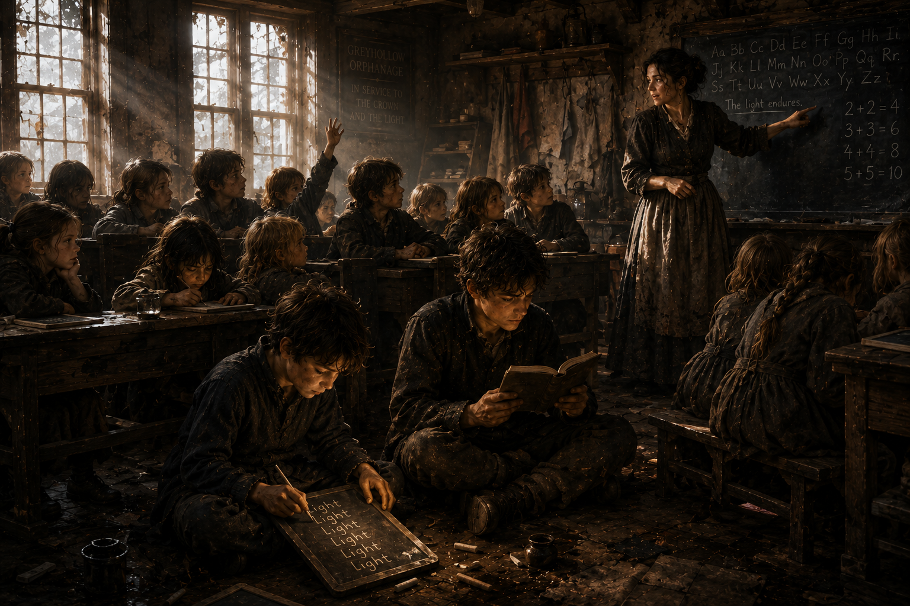
Sister Marianne · Every Letter Is a DoorRayden was eleven years old that winter.
Too angry for his age.
Too observant.
Too willing to fight.
He spent most mornings bruised from arguments with older boys or bleeding from training accidents in the yard behind the orphanage.
His closest friend was another orphan named Caelum, a sharp-tongued boy two years older than him who possessed unstable magical talent he barely understood.
Sometimes candles lit when Caelum lost his temper.
Sometimes spoons bent during arguments.
Once, during winter, the wash basin froze solid because another boy punched him hard enough to split his lip.
The other children thought it was incredible.
Rayden thought it meant Caelum would survive longer than most people in Oaksmane.
The two became inseparable.
They stole bread from the dock markets together.
Shared blankets during winter freezes.
Fought older street gangs behind warehouse alleys.
At night they whispered about impossible futures while rain leaked through the ceiling overhead.
Caelum wanted to become a mage someday.
Rayden wanted enough strength that nobody could ever make children afraid again.
Neither boy understood how expensive those dreams truly were.
Rayden’s older brother, Garrick Cale, returned whenever military rotations allowed.
To the children, Garrick felt larger than ordinary men.
Not because he was famous.
Because he cared.
He fixed broken furniture.
Brought extra food whenever he could steal military rations safely.
Remembered birthdays.
Stayed awake beside children with nightmares.
In Oaksmane, kindness looked almost supernatural.
But Garrick carried something heavy behind his eyes.
Rayden noticed it more each year.
The exhaustion.
The restrained anger.
The constant tension whenever certain names appeared in conversation.
Because Garrick did not serve a kingdom.
He served under Lord Halbrecht Veyne’s district military authority.
Halbrecht controlled most military contracts surrounding Oaksmane and the lower industrial territories.
Poor boys became soldiers beneath him because poor boys needed food more than dignity.
Garrick hated the work.
Marianne hated it more.
But military pay helped keep the orphanage alive during famine winters.
That was how men like Halbrecht ruled places like Oaksmane.
Not through loyalty.
Dependency.
Whenever Garrick returned, training began immediately.
The older boys gathered behind the orphanage beside the frozen canal carrying wooden practice swords carved from scrap lumber.
Even some girls joined despite Garrick pretending not to notice.
Marianne watched from the back steps every time while pretending to organize laundry.
Usually failing.
Garrick taught discipline before combat.
“A sword doesn’t make you dangerous,”
he told them repeatedly.
“Hunger does. Fear does. A sword only decides what kind of monster you become afterward.”
Most children only half-understood lessons like that.
Rayden listened to every word.
Garrick trained Rayden harder than the others.
Longer stances.
More punishment drills.
More bruises.
One freezing evening after practice, Garrick stopped Rayden mid-swing beside the canal wall.
“You’re fighting angry again.”
Rayden tightened both hands around the wooden sword.
“So?”
Garrick looked toward the factory smoke beyond Oaksmane.
“So angry men die early.”
Rayden frowned.
“What survives then?”
For a while Garrick said nothing.
Then quietly:
“The ones who know what they’re protecting.”
 Garrick Cale · The Ones Who Know What They’re Protecting
Garrick Cale · The Ones Who Know What They’re Protecting
Marianne and Garrick spent long nights together after the children slept.
Usually near the kitchen stove beneath dim candlelight.
Repairing clothes.
Reviewing ration books.
Speaking quietly while snow gathered outside the windows.
The children pretended not to notice the way Marianne smiled differently around him.
Or how Garrick relaxed slightly whenever she entered the room.
But everyone noticed.
Especially Rayden.
Sometimes he woke during the night and saw them sitting together silently with their hands touching across the table beside the dying stove fire.
Not speaking.
Just existing beside each other in peace for a few stolen minutes.
In Oaksmane, that counted as luxury.
 Marianne & Garrick · The Evening He Came Back
Marianne & Garrick · The Evening He Came Back
Fear always lived near the orphanage.
Especially after dark.
Some nights expensive carriages moved too slowly through the district streets.
Some guards stared too long at older girls.
Some wealthy men donated food with smiles that made Marianne’s face harden afterward.
Children surviving in dangerous places learned quickly which adults felt wrong.
The final peaceful night of Rayden’s childhood ended beside the stove.
The children slept beneath patched blankets while snow drifted softly outside the cracked windows.
Caelum practiced tiny sparks of magic between his fingers.
Garrick sharpened wooden practice swords beside the table.
Marianne repaired winter coats beneath candlelight.
And Rayden — eleven years old, bruised, angry, alive — slowly fell asleep believing the orphanage would still exist tomorrow.
He was wrong.
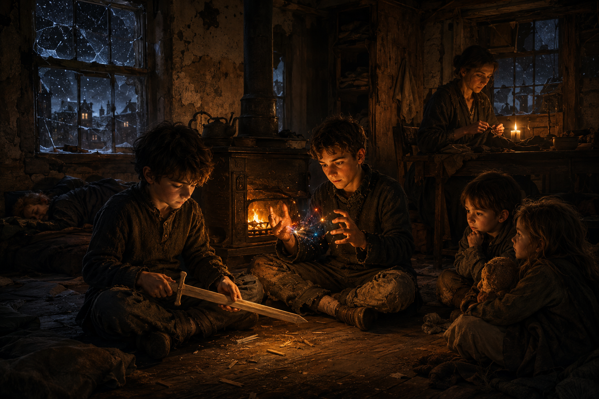
Oaksmane Orphanage · Year 1031II. Lord Halbrecht Veyne
Sundered Age — Year 1031
Children learned fear before they learned language in Oaksmane.
Not dramatic fear.
Not battlefield fear.
Smaller things.
The sound of boots stopping outside your alley at night.
The smell of alcohol on wealthy men.
The silence adults used when speaking about nobles.
Rayden learned all of those before turning eleven.
Lord Halbrecht Veyne taught him the rest.
To the upper districts, Halbrecht was admired.
The newspapers called him:
“The Lantern of Oaksmane.”
He funded orphanages.
Donated grain during famine winters.
Sponsored church restoration projects.
Paid for military widows’ funerals.
His portrait hung inside government halls.
People described him as: cultured, soft-spoken, disciplined, generous.
Rich districts loved men like Halbrecht because they turned cruelty into paperwork.
The lower districts knew different stories.
Girls disappearing from dockside streets.
Young servants transferred quietly between noble estates.
Soldiers beaten half-dead after questioning orders.
No one said Halbrecht’s name loudly when discussing such things.
Because poor people survived longer by pretending not to notice monsters.
Garrick noticed everything.
That was the problem.
One freezing evening after military rotation, Garrick arrived at the orphanage later than usual with fresh bruises across his jaw and dried blood staining the collar of his uniform.
Marianne immediately pulled him into the kitchen after the children slept.
Rayden overheard part of the conversation through the hallway.
Not intentionally.
The walls were simply thin.
“You fought again.”
Garrick sat heavily beside the stove.
“He deserved worse.”
Marianne cleaned blood from his cheek carefully.
“You’ll get yourself killed.”
Garrick laughed quietly.
Not because anything was funny.
Because exhausted people sometimes laughed instead of screaming.
“You know what one of Halbrecht’s officers did today?”
Marianne said nothing.
Garrick stared into the fire.
“A girl stole bread near the south market.”
“She couldn’t have been older than fourteen.”
“They broke three fingers teaching her discipline.”
The room stayed quiet for several seconds afterward.
Then Garrick spoke again.
“He watched it happen.”
“Smiling.”
Marianne closed her eyes slowly.
Like someone hearing confirmation of a fear they already carried.
“You need to leave his service.”
Garrick immediately shook his head.
“And go where?”
“You think soldiers like me retire?”
“You think poor men get choices?”
His voice lowered afterward.
“If I disappear, this place loses half its winter food.”
Marianne looked around the orphanage kitchen.
The cracked walls.
The ration shelves.
The sleeping children beyond the hallway.
She hated that he was right.
Later that night, Garrick found Rayden awake pretending to sleep near the stove.
Without speaking, Garrick sat beside him and handed over a wrapped piece of sweetbread stolen from military rations.
Rayden accepted it silently.
After a while he asked:
“Why don’t you kill him?”
Garrick became very still.
The fire crackled softly between them.
Finally:
“Because men like Halbrecht never stand alone.”
Rayden frowned.
Garrick looked toward the dark windows.
“You kill one monster wearing silk, another one inherits the chair before the body gets cold.”
That answer stayed with Rayden for years.
Halbrecht visited the orphanage again three days later.
The entire building changed when his carriage stopped outside.
Children became quieter.
Marianne’s shoulders stiffened.
Even Garrick’s jaw tightened visibly.
Fear moved through rooms faster than smoke.
Halbrecht entered wearing dark winter velvet trimmed with silver embroidery.
Snow melted slowly across his polished boots while two armed guards remained near the doorway.
One carried a military saber.
The other wore black battlemage markings stitched into the collar of his coat.
The mage was young.
Arrogant.
Too comfortable holding power.
Small blue sparks occasionally danced unconsciously across his fingertips.
The younger children stared at him with fascination.
Caelum did not.
Caelum looked terrified.
Rayden noticed immediately.
Caelum had gone pale beside the staircase.
“What’s wrong?”
Caelum stared toward Halbrecht without blinking.
“Something’s wrong around him.”
Rayden frowned.
“What does that mean?”
Caelum swallowed hard.
“I don’t know.”
“It feels…”
“Cold.”
Then the candle beside them suddenly extinguished itself.
Halbrecht moved through the orphanage smiling politely while Marianne guided him room to room.
He complimented the children.
Praised the discipline.
Asked harmless questions softly.
Everything about him sounded civilized.
That was what made him terrifying.
Monsters shouting about cruelty were easy to recognize.
Halbrecht spoke gently while making children afraid to breathe.
At one point he stopped near the older girls repairing winter coats beside the stove.
One girl lowered her eyes immediately.
Another subtly shifted farther away.
Halbrecht smiled warmly.
“You work very hard here.”
His hand rested briefly against one girl’s shoulder.
She visibly flinched.
The noble noticed.
And smiled slightly wider.
Rayden saw Garrick’s hand tighten hard enough around a chair behind them that the wood creaked.
Marianne noticed too.
She stepped between Halbrecht and the girls smoothly enough to appear accidental.
“The younger children prepared tea.”
Halbrecht’s eyes rested on her for several seconds afterward.
Not angry.
Interested.
That look frightened Rayden more than shouting would have.
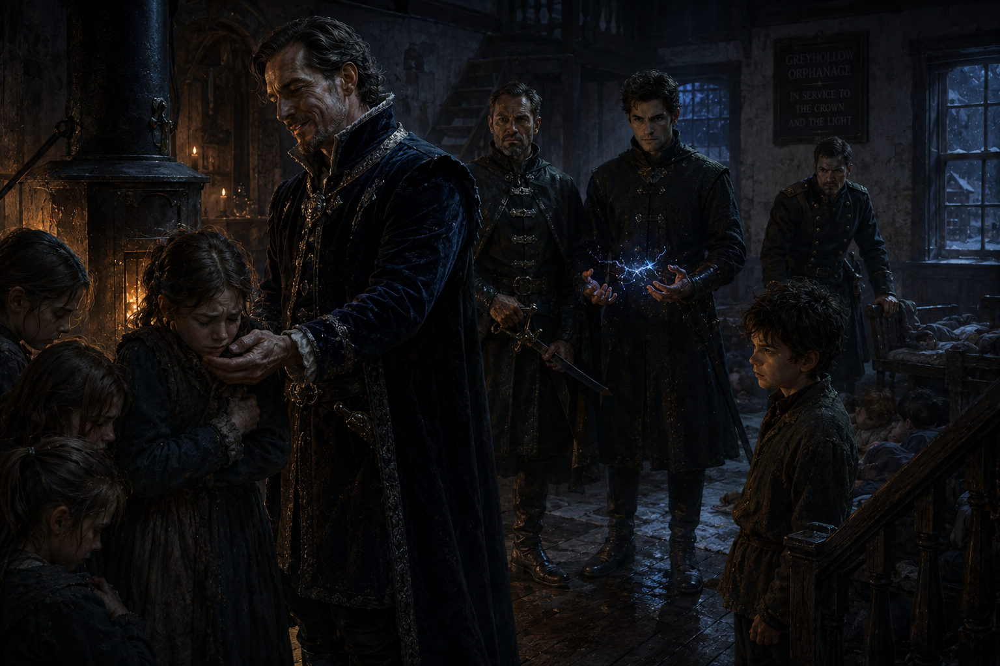
Lord Halbrecht Veyne · The Lantern of OaksmaneThe battlemage guard wandered near the training yard afterward while Garrick supervised practice drills with the boys.
The mage watched them with amused contempt.
“Training them for war already?”
Garrick ignored him.
The mage smiled.
Blue sparks rolled lazily between his fingers.
“You know what happens to most slum boys in military service?”
“They die before twenty.”
Garrick finally looked at him then.
“And yet you’re still talking.”
The mage laughed.
But his hand drifted closer toward the spell focus attached near his belt.
For a moment Rayden genuinely thought Garrick might kill him right there in the yard.
Part of him wanted Garrick to.
That night, after Halbrecht finally left, Marianne locked every door personally.
Twice.
Then checked the upstairs windows.
Then the cellar entrance.
Rayden watched silently from the staircase.
She was afraid.
Not nervous.
Afraid.
Adults rarely allowed children to see that openly.
Garrick found her beside the stove after midnight.
Snow hammered softly against the windows outside.
The kitchen fire burned low.
For a long time neither spoke.
Finally Marianne whispered:
“He’s going to come back.”
Garrick said nothing.
Because they both already knew she was right.
Marianne stared into the fire.
“I see the way he looks at them.”
Garrick’s jaw tightened slowly.
“If he touches any of the children…”
He stopped speaking halfway through the sentence.
Because both of them understood how that sentence ended.
Not with survival.
Marianne reached across the table and held his hand tightly.
“Don’t throw your life away.”
Garrick looked at her quietly.
Tired.
Angry.
In love.
Then he said the thing that would eventually destroy all of them:
“Some things deserve violence.”
III. The Night of Fire
Sundered Age — Year 1031
The storm arrived just after midnight.
Rain hammered the rooftops of Oaksmane hard enough to shake loose old wood from the factory walls, and thunder rolled across the district like distant artillery.
Most of the orphanage children slept downstairs near the stove because the upper floor had become too cold to survive through the night comfortably.
Blankets overlapped across the floor.
Tiny bodies slept shoulder-to-shoulder for warmth.
The fire crackled softly inside the iron stove.
For a few brief hours, the orphanage almost felt peaceful.
Marianne sat beside the kitchen table repairing winter coats beneath candlelight while rain tapped steadily against the windows.
Caelum sat nearby with two younger boys watching tiny sparks dance between his fingertips.
The younger children giggled quietly every time the sparks changed color.
Rayden sat cross-legged near the stove sharpening old wooden practice swords using Garrick’s whetstone despite knowing the stone was meant for steel.
“You’re ruining it.”
Caelum grinned without looking up.
Rayden shrugged.
“It already looks ruined.”
Marianne smiled faintly from the table.
Small moments like that mattered more in Oaksmane than people realized.
Poor children learned to treasure peace because it never stayed long.
Garrick was gone.
Military rotation under Halbrecht’s command.
Rayden hated those nights most.
The orphanage always felt less safe without him there.
Even Marianne seemed quieter whenever Garrick was away.
Thunder shook the windows again.
One of the younger girls stirred nervously in her sleep.
Marianne stood, walked across the room, and gently pulled the blanket higher around the child’s shoulders.
Rayden watched her for a moment.
Then the knocking started.
Three slow knocks against the front door.
Not requests.
Ownership.
The entire orphanage became still.
Even the storm suddenly sounded distant.
Marianne froze beside the doorway.
Rayden saw fear enter her face immediately.
Real fear.
Not concern.
Not nervousness.
Fear.
The knocking came again.
Slow.
Patient.
Confident.
Marianne quietly slipped one hand beneath her apron before approaching the door.
Rayden noticed the kitchen knife immediately.
She had been expecting this.
When Marianne finally opened the door, cold rain and torchlight spilled into the orphanage hall.
Lord Halbrecht Veyne stood outside beneath a black umbrella held by one of his guards.
Two soldiers waited behind him.
The battlemage from earlier visits stood nearest the stairs, blue sparks crawling lazily between his fingers.
Halbrecht smiled warmly.
“My apologies for the hour.”
“The storm became unpleasant.”
Marianne did not move aside.
“The children are sleeping.”
Halbrecht’s expression remained calm.
“Then I’ll be brief.”
Without waiting for permission, he stepped inside.
The guards followed immediately.
One quietly shut the door behind them.
The battlemage traced glowing symbols briefly near the frame.
The lock clicked by itself.
Caelum went pale instantly.
“Rayden...”
“They locked it.”
Rayden’s stomach tightened.
Halbrecht slowly removed his gloves while walking deeper into the orphanage.
He complimented the repairs.
Asked if the children were fed properly.
Spoke softly enough that, without context, he might have sounded kind.
That was what made him terrifying.
Everything cruel about him wore a civilized face first.
The older girls near the stove lowered their heads immediately when Halbrecht approached.
One visibly shifted backward.
Another grabbed the sleeve of the younger child beside her protectively.
Halbrecht noticed every reaction.
And enjoyed it.
“You work very hard here.”
His hand rested against one older girl’s shoulder.
She flinched hard enough to nearly drop the sewing basket in her lap.
Halbrecht smiled slightly wider.
“There’s no reason to be frightened.”
Marianne moved immediately between them.
“They’re children.”
For the first time that night, Halbrecht’s eyes changed.
The warmth disappeared.
Not anger.
Something colder.
“You forget who funds this building.”
Marianne did not move.
“No.”
“I remember exactly.”
The room became dangerously quiet.
Even the guards looked tense now.
Rayden saw one of them glance nervously toward Halbrecht.
The noble slowly stepped closer to Marianne.
“You should be careful how you speak to your betters.”
Then his eyes drifted back toward the girls.
“Especially when they depend on generosity.”
One of the older girls tried quietly moving away.
Halbrecht grabbed her wrist immediately.
She cried out in fear.
Rayden moved before thinking.
He grabbed the nearest wooden practice sword and charged.
“LET HER GO!”
The wooden blade struck Halbrecht across the shoulder hard enough to crack loudly.
The room froze.
For half a second nobody moved.
Then the battlemage laughed.
“The little animal bites.”
Halbrecht slowly turned toward Rayden.
The civilized mask was gone now.
Only contempt remained.
One of the guards struck Rayden across the face hard enough to throw him against the table.
Caelum screamed.
The younger children woke instantly in panic.
Everything shattered afterward.
Marianne moved first.
The kitchen knife flashed from beneath her apron and buried itself into a guard’s throat.
Hot blood exploded across the stove and floorboards.
The man collapsed choking violently while trying to pull the blade free.
Everyone stared at Marianne in shock.
Including Halbrecht.
For one glorious second, the terrified caretaker of the orphanage looked like a cornered wolf willing to die with its teeth buried in something important.
“GET AWAY FROM THEM!”
The battlemage reacted instantly.
Blue fire erupted across his hands.
He hurled ignition magic into the curtains beside the staircase.
The old dry fabric exploded into flame immediately.
Another spell struck the shelves near the kitchen.
Oil lamps shattered.
Fire raced across the floorboards.
The storm wind pouring through cracked windows fed the flames hungrily.
Within seconds the orphanage became an inferno.
Children screamed everywhere.
Smoke rolled downward across the ceiling thick enough to choke on.
The younger boys panicked immediately, trampling blankets while trying to run toward the locked front door.
One slammed against it desperately.
It did not move.
The battlemage smiled.
Chaos consumed the orphanage.
One guard grabbed an older girl by the hair and dragged her screaming toward the hallway wall.
Another overturned tables searching for hiding children.
The fire spread unnaturally fast now, climbing walls and beams like living things.
Smoke burned Rayden’s lungs.
He could barely see.
Caelum raised trembling hands instinctively.
Ice exploded across the nearby floorboards in a desperate uncontrolled burst of magic, slowing part of the flames long enough for several younger children to escape toward the pantry corridor.
The battlemage noticed immediately.
“Well.”
“A gifted one.”
Blue fire gathered in his palms.
Caelum froze in terror.
Rayden tackled the mage before the spell released fully.
The half-formed fire blast detonated sideways into the ceiling beams instead.
Burning timber crashed downward between Rayden and Caelum in an explosion of sparks.
Children screamed behind the collapsing debris.
Rayden tried reaching through the flames.
“CAELUM!”
Smoke swallowed the answer.
Then another section of the ceiling collapsed between them.
Rayden never saw him again that night.
 The Night of Fire · Oaksmane · Year 1031
The Night of Fire · Oaksmane · Year 1031
Marianne fought like someone who already understood she would die there.
She smashed boiling soup across one guard’s face.
Stabbed another through the side of the neck with broken kitchen steel.
Dragged terrified children toward collapsing exits while smoke blackened her lungs.
One little girl became trapped beneath a fallen beam near the staircase.
Marianne tried lifting it alone despite the flames climbing her sleeves.
She could have escaped then.
Instead she stayed.
The battlemage kicked Rayden hard enough to crack ribs.
Blue fire gathered again around his hands.
“You should’ve stayed quiet.”
Then the front doors exploded inward.
Garrick arrived like violence given human form.
Rain and smoke burst around him as he charged through the doorway carrying military steel still wet from the storm outside.
He saw the burning orphanage.
The screaming children.
Marianne covered in blood.
Rayden half-buried beneath debris.
And something inside him broke permanently.
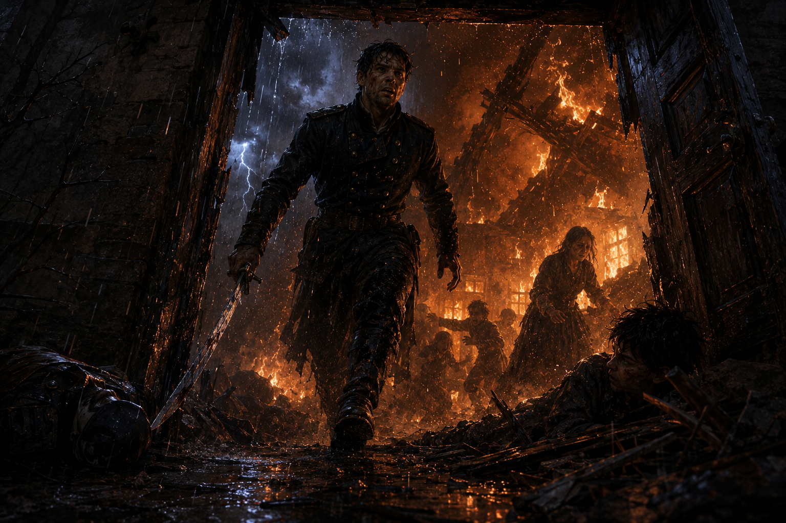
Garrick Cale · Into the FireThe first guard died before turning fully around.
Garrick’s sword entered through the man’s mouth and exited behind the skull.
The second lost his arm at the elbow.
The battlemage barely managed to raise a spell barrier before Garrick slammed into him hard enough to drive both men through a burning table.
Blue fire erupted wildly across the room.
Garrick beat the mage to death against the floorboards with such brutality that Rayden barely recognized him anymore.
Then Garrick saw Marianne.
Still alive.
Barely.
Burns covered one side of her body.
Blood soaked her dress.
Smoke trembled in every breath.
Yet she still shielded trapped children behind her.
Garrick stared at her in horror.
Marianne looked back at him through the flames.
“Save them.”
Not herself.
Them.
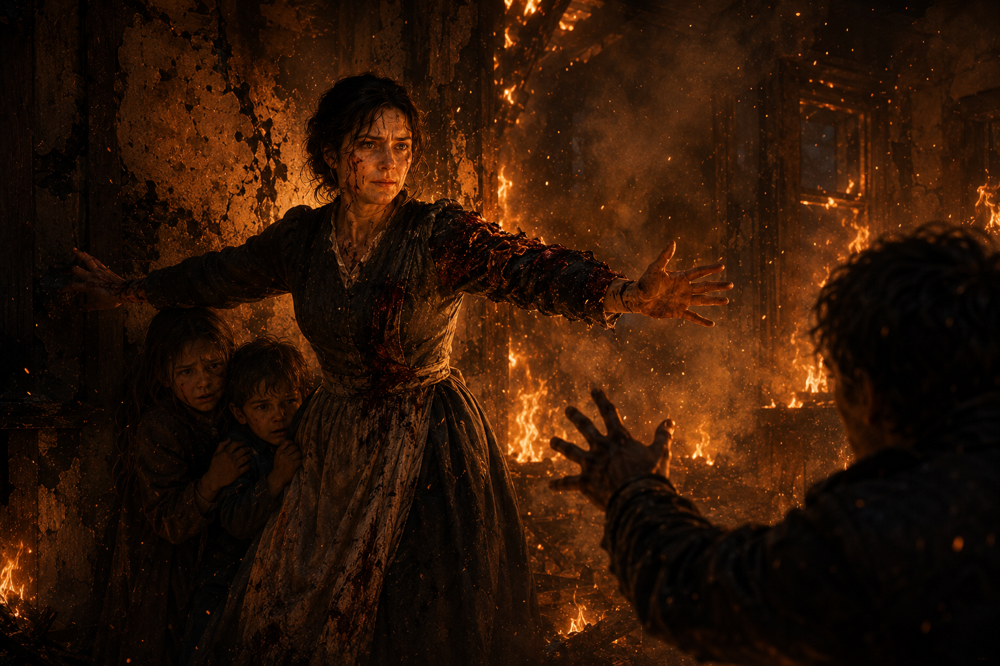
Sister Marianne · Save ThemThe ceiling groaned overhead.
Burning beams began collapsing across the orphanage.
Garrick dragged Rayden upright while children screamed somewhere beyond the smoke-choked hallways.
Rayden kept searching desperately through the fire.
“CAELUM!”
“CAELUM!”
No answer came.
Only fire.
Garrick tried reaching Marianne.
Half the upper floor collapsed between them first.
Burning debris exploded across the room.
The trapped children screamed once.
Then stopped.
Marianne disappeared behind the flames.
Garrick screamed her name exactly once.
Rayden never forgot the sound.
It did not sound human.
Garrick carried Rayden through the pantry corridor moments before the orphanage roof collapsed completely.
The sound thundered across Oaksmane.
Burning sparks spiraled upward into the storm sky like dying stars.
The screams inside stopped one by one.
Then silence remained.
Lord Halbrecht Veyne survived.
That was the cruelest part.
Monsters like him usually did.
IV. The Execution
Sundered Age — Year 1031
The official report described the orphanage fire as an accident caused by unstable heating lanterns during the storm.
Twenty-three children dead.
Structural collapse.
Tragic circumstances.
No mention of soldiers.
No mention of screaming girls dragged through smoke.
No mention of magical fire.
No mention of Lord Halbrecht Veyne.
Oaksmane returned to normal frighteningly fast.
The factories reopened by sunrise.
The canals still carried blood-colored waste.
The rich districts still held parties uphill while smoke from the orphanage ruins drifted through the lower streets.
Poor people learned early that the world did not stop for their dead.
Rayden woke three days later inside a rotting storage room behind an abandoned butcher shop.
Every breath hurt.
The battlemage’s kick had cracked ribs.
Burns covered one side of his arm.
The smoke damage inside his lungs made coughing feel like swallowing broken glass.
Fever came and went constantly.
Sometimes he woke screaming because he smelled smoke again.
Sometimes he heard children crying inside walls that no longer existed.
Sometimes he saw Marianne burning every time he closed his eyes.
Garrick stayed beside him almost the entire time.
He barely slept.
Barely spoke.
Barely moved unless Rayden’s fever worsened.
The man who once laughed with orphan children now looked like something hollowed out from the inside.
One night Rayden woke to the sound of Garrick vomiting outside the room.
Not ordinary sickness.
The violent kind.
The kind soldiers developed after seeing things they could not survive mentally.
Rayden quietly watched through the cracked doorway while Garrick knelt in the alley rain with bloodshot eyes and shaking hands.
For the first time in his life, Garrick looked weak.
That frightened Rayden more than the fire had.
Later that night Garrick sat beside him in silence while sharpening his military sword beneath lantern light.
The blade still carried dried blood inside the fuller groove.
Rayden stared at it for a long time.
“You killed them.”
Garrick did not answer immediately.
Finally:
“Not enough.”
Rayden asked the question anyway.
“Did you find Caelum?”
Silence.
Garrick looked away first.
That answer hurt worse than words.
The next morning Garrick marched directly into the Oaksmane district barracks carrying Marianne’s bloodstained kitchen knife wrapped in cloth.
Rayden tried following him despite the fever.
Garrick stopped him near the alley entrance.
“Stay here.”
“He killed them.”
Garrick’s face hardened.
“I know.”
“Then kill him.”
For a moment something dangerous moved behind Garrick’s eyes.
Then it disappeared.
“If I kill him now, they’ll bury the truth with me.”
“I’m doing this properly first.”
That sentence haunted Rayden later.
Because it was the last time Garrick still believed justice and law were connected.
The accusation became public before noon.
Witnesses later described Garrick standing inside the district command hall soaked from rainwater while openly naming Lord Halbrecht responsible for the orphanage massacre.
Soldiers went silent.
Officers stopped writing.
Even servants froze.
Because everyone in that room believed him.
That was the problem.
Halbrecht arrived less than an hour later.
Perfectly composed.
Fresh gloves.
Clean uniform coat.
The burn mark across his wrist from Rayden’s wooden sword strike had already been hidden beneath silk wrappings.
He looked like a man attending business negotiations.
Not someone who had watched children burn alive days earlier.
Garrick attacked him before the hearing even began.
Not recklessly.
Not emotionally.
Like an execution.
He crossed the command hall in three steps and slammed Halbrecht against the stone wall hard enough to crack plaster.
The noble’s guards reacted instantly.
Steel erupted across the room.
Garrick broke one man’s jaw with the hilt of his sword before six soldiers dragged him to the ground.
Even restrained, he kept trying to reach Halbrecht.
“You burned children.”
Halbrecht calmly adjusted his gloves.
“You are emotional, Sergeant Cale.”
Garrick nearly broke free after that.
The trial lasted less than two hours.
No orphan survivors were questioned.
No investigation occurred.
No evidence was reviewed.
Marianne was officially recorded as mentally unstable.
The fire became an unfortunate accident.
Garrick became the criminal.
The charges included:
- Assault against noble authority
- Treasonous conduct
- Incitement of unrest
- Attempted murder of a district lord
The sentence was immediate execution.
Rayden learned about it from a drunk dockworker near sunset.
At first he refused to believe him.
Then he started running.
The fever still burned through his body.
His ribs screamed every time he inhaled.
But Rayden sprinted through Oaksmane anyway, slipping through rainwater and muddy streets while desperately trying to reach the execution square.
On the way he begged anyone armed for help.
Mercenaries.
Guards.
Dock fighters.
Most laughed.
One mercenary looked at the execution order and quietly handed it back.
“That name’s protected, kid.”
Another said:
“You don’t survive fighting nobles.”
Rayden hated adults after that.
The execution platform stood at the center of Oaksmane’s lower market square beside the frozen fountain.
Snow drifted lightly through the evening air.
Hundreds gathered to watch.
Public executions were not punishment.
They were reminders.
The executioner waiting beside the block was enormous.
An orc.
Nearly seven feet tall with gray-green skin covered in ritual scar patterns burned into the flesh years earlier.
His shoulders looked broad enough to carry doors as shields.
The execution axe resting beside him resembled a siege weapon more than a tool.
Its blade was stained dark from old blood no amount of sharpening ever fully removed.
The crowd whispered his title quietly:
“Gorvak the Silent.”
The orc never spoke.
He simply performed executions because the district paid well and dead men did not care what race held the axe.
Garrick arrived in chains shortly after dusk.
Rayden almost failed to recognize him.
They had beaten him badly.
One eye swollen shut.
Split lips.
Bruised ribs visible even beneath torn clothing.
But he still walked upright.
That mattered.
Halbrecht watched from an elevated balcony wrapped in heavy winter furs while wine steamed gently beside him.
Warm.
Comfortable.
Protected.
That image stayed inside Rayden forever.
Power watching suffering from safety.
The magistrate began reading the charges while snow gathered slowly across the execution platform.
His voice sounded bored.
Like condemning innocent men had become routine years earlier.
Maybe it had.
Rayden forced himself through the crowd desperately.
“GARRICK!”
People shoved him backward immediately.
Someone struck him across the shoulder.
Another voice snapped:
“Shut the boy up.”
Garrick heard him anyway.
For the first time since the orphanage fire, Garrick smiled.
Small.
Broken.
Tired.
But real.
Then he shook his head once.
Don’t.
Rayden understood immediately.
Garrick was not afraid of dying.
He was afraid Rayden would try to stop it.
The magistrate asked for final words.
Garrick lifted his head slowly.
Snow settled across his dark hair.
His eyes found Rayden through the crowd immediately.
Everything else disappeared for one moment.
The crowd.
The square.
The world.
Only the brothers remained.
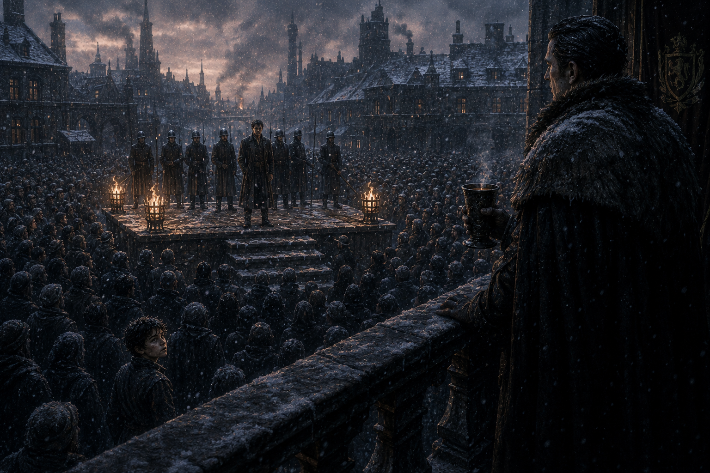
The Public Square · Year 1031Garrick spoke softly.
Only for Rayden.
“Live.”
“Not like them.”
Gorvak the Silent stepped forward.
The massive orc looked at Garrick for several seconds before positioning him beside the execution block.
For the briefest moment, something resembling pity crossed the executioner’s scarred face.
Then professionalism returned.
Because pity did not stop axes.
Rayden screamed when the blade rose.
Not words.
Just raw sound torn from somewhere deep enough to damage the soul.
The axe fell.
Blood sprayed across the snow.
The crowd recoiled instinctively.
The sound echoed through the frozen square like splitting timber.
One woman began crying somewhere nearby.
Halbrecht calmly sipped wine from the balcony above.
Rayden collapsed to his knees in the snow.
The world became distant afterward.
Muted.
Cold.
Wrong.
He barely remembered leaving the square.
Only fragments remained:
- The steam rising from Garrick’s blood in winter air
- The sound of the execution axe striking wood
- The crows lifting from nearby rooftops all at once
- Halbrecht smiling faintly from the balcony above
That night, beside the frozen canals of Oaksmane, Rayden Cale cried until no sound came out anymore.
Not because the world was cruel.
He already knew that.
Because the world had murdered the only man who ever taught him what strength was supposed to protect.
And somewhere beneath the grief, beneath the horror, beneath the helplessness...
Something inside him quietly began learning how to hate.
V. The Boy Left Alive
Sundered Age — Year 1032
Winter continued after Garrick died.
That offended Rayden more than anything else.
The factories still opened before sunrise.
The market still filled with shouting merchants.
The canals still carried black industrial runoff beneath frozen bridges.
Oaksmane kept breathing like nothing important had happened.
As if twenty-three burned children and one executed soldier were ordinary numbers swallowed by another week.
For a while, Rayden wandered the district without direction.
Not living.
Just continuing.
The fever returned constantly.
Smoke damage still burned inside his lungs, making every cold breath painful. Some mornings he woke beneath alley scaffolding coughing black mucus into the snow while stray dogs watched from nearby garbage piles.
He stopped noticing the cold after the second week.
Hunger replaced it.
At night he dreamed about the orphanage.
Not the real version.
The burning one.
In the dreams, the hallways never ended.
The smoke never cleared.
The children kept screaming behind walls he could not break open.
Sometimes Marianne appeared through the fire carrying burned blankets in her arms.
Sometimes Garrick stood on the execution platform staring at him silently while snow fell forever around them.
The worst dreams were the quiet ones.
The ones where Caelum simply vanished without explanation.
Rayden stopped sleeping properly after that.
The orphanage ruins were stripped within days.
Scavengers stole iron nails from the collapsed beams.
Broken furniture disappeared.
Even partially burned blankets vanished.
One afternoon Rayden returned there alone and found children from another district playing beside the ruins.
Laughing.
He almost attacked them before realizing they simply did not know what happened there.
The world erased poor people quickly.
Halbrecht’s influence only grew stronger afterward.
New district patrols appeared near the docks.
Military banners hung across Oaksmane streets.
More disappearances spread through the lower districts.
No one spoke openly anymore.
Because everyone had seen what happened to Garrick.
Rayden learned quickly that starving children became invisible to adults.
Invisible people survived differently.
He stole food first.
Bread from market carts.
Dried fish from canal merchants.
Rotten fruit discarded behind taverns.
The first time he was caught, a butcher broke two of his teeth with a wooden club.
Rayden returned three nights later and stole from him again anyway.
Hunger removed fear eventually.
Street gangs noticed him soon after.
Oaksmane always produced predators faster than soldiers.
Most gangs controlled alley territory, smuggling routes, gambling dens, or child theft operations near the docks.
Orphans without protection became merchandise quickly.
One night three older boys cornered Rayden beneath the canal bridge near the slaughterhouse district.
The oldest carried a rusted knife.
“You sleep around our territory now.”
Rayden said nothing.
The second boy grabbed his coat and searched for stolen food.
When he found only half-frozen bread, he laughed.
“That all?”
The third boy noticed Garrick’s whetstone hanging from Rayden’s belt.
“Take that too.”
Something inside Rayden snapped then.
He moved before thinking.
The broken metal shard hidden inside his sleeve punched upward beneath the second boy’s jaw and buried itself through the roof of his mouth.
Hot blood sprayed across Rayden’s hands.
The boy collapsed immediately, choking violently while his teeth scattered across the frozen stone.
Everyone froze.
Including Rayden.
The wounded boy twitched helplessly in the snow.
Blood pooled black beneath him.
The other two stumbled backward in panic.
One started screaming for help.
The other ran.
Rayden remained standing there breathing hard while the dying boy clawed weakly at his arm.
Then the movement stopped.
Rayden stared at the corpse for a very long time afterward.
He expected guilt.
Horror.
Regret.
Instead he felt something colder.
Understanding.
Violence worked.
Law had executed Garrick.
Violence saved people.
That realization frightened him more than the killing itself.
Days blurred together afterward.
Rayden became harder.
Quieter.
He stopped talking unless necessary.
Stopped trusting strangers.
Stopped expecting kindness.
The anger inside him no longer burned hot.
It froze.
Rumors spread constantly through the lower districts if someone listened carefully enough.
Rayden listened to all of them.
He heard about missing girls near Halbrecht-controlled warehouses.
About strange illnesses spreading among soldiers.
About men returning from certain estates with blackened veins and violent tempers.
One drunk dockworker whispered something stranger than the rest.
“They say the lord keeps priests underground now.”
Another spat into the canal afterward.
“Not priests.”
“Something worse.”
Rayden remembered that conversation years later.
The cold nearly killed him before spring arrived.
Not dramatically.
Not heroically.
Quietly.
It happened behind the abandoned southern tannery after another failed theft attempt left him bleeding from the scalp and limping badly from a cracked ankle.
Snow fell heavily that night.
Rayden curled beside the tannery wall wrapped in stolen cloth while fever burned through his body hard enough to blur reality.
For hours he drifted between consciousness and dreams.
He saw Marianne repairing coats beside the stove again.
Garrick sharpening swords.
Caelum laughing somewhere nearby.
Then the visions changed.
The orphanage burned again.
Children screamed inside smoke.
Garrick’s severed head rolled across execution snow.
Halbrecht smiled from the flames.
Rayden tried standing.
His body failed immediately.
Snow gathered slowly across his shoulders.
The cold became strangely gentle after a while.
That frightened him most.
Because somewhere deep down, he realized this was probably how dying began.
Footsteps approached through the storm.
Slow.
Measured.
Not afraid.
Rayden forced one eye open weakly.
An old woman stood above him beneath a dark traveling cloak carrying a lantern in one hand and a massive sword across her back.
Her face was scarred.
One eye clouded white from an old injury.
The other studied him carefully.
Not kindly.
Professionally.
She crouched beside him and noticed the metal shard still clenched inside his frozen hand.
Then the bruises.
The starvation.
The combat posture he maintained even half-conscious.
Finally she looked directly into his eyes.
And saw the hatred there.
The old woman sighed quietly.
“Either you die tonight...”
Her gaze sharpened slightly.
“...or you become something dangerous.”
 Elira Voss · The World's Ugliest Kindness
Elira Voss · The World's Ugliest Kindness
Then she lifted Rayden over one shoulder and carried him into the storm.
VI. Elira Voss
Sundered Age — Year 1032
Rayden Cale should have died behind the southern tannery.
Most children abandoned in Oaksmane eventually did.
Not dramatically.
Not heroically.
They froze.
Starved.
Disappeared.
The city swallowed poor children quietly because silence was cheaper than compassion.
But Rayden did not die.
Because Elira Voss found him first.
He woke three days later with a knife pressed against his throat.
Instinct moved before thought.
Rayden grabbed the wrist immediately, twisted hard, and rolled sideways off the cot despite the explosion of pain through his ribs.
The room spun violently.
A boot slammed into his stomach before he fully stood.
He crashed into the wooden floor coughing blood.
The knife never moved from his throat.
“Good.”
The old woman stood over him beneath lantern light.
Tall.
Broad-shouldered.
Scarred.
One eye clouded white from an old injury.
Burn scars climbed across her neck disappearing beneath the collar of her shirt.
Gray hair tied behind her head roughly with leather cord.
She looked less like a retired adventurer and more like someone war had forgotten to kill properly.
“You still react before thinking.”
“That means you’re alive.”
Rayden glared at her through fever haze.
“Who are you?”
The woman sheathed the knife calmly.
“Elira Voss.”
Even half-conscious, Rayden recognized the name.
People in Oaksmane taverns still whispered stories about her.
The Iron Widow.
Former A-Rank adventurer.
Dungeon Vanguard survivor.
The woman who once killed a tunnel wyrm by crawling inside its mouth after losing her sword arm grip during a collapse.
Most stories about Elira ended with: “and everyone else died.”
Rayden suddenly understood why.
Elira’s home stood beyond the southern outskirts of Oaksmane near abandoned quarry territory where monster sightings occasionally drove normal civilians away.
The structure itself resembled a fortified hunting lodge more than a house.
Weapons hung across the walls.
Monster bones decorated ceiling beams.
Maps covered entire sections of wood paneling.
Everything smelled faintly of steel, smoke, medicine, and old leather.
It felt dangerous.
Safe places usually didn’t.
Recovery took weeks.
Elira treated wounds harshly.
No comforting words.
No soft reassurances.
When Rayden’s fever worsened, she forced medicine down his throat while insulting his survival instincts.
When his ribs reopened from coughing, she wrapped them tighter and told him pain was useful because it reminded idiots they still possessed organs worth protecting.
Rayden hated her immediately.
That was probably why she kept him alive.
The first real conversation happened during rain.
Rayden sat near the fireplace sharpening scavenged metal while Elira cleaned monster blood from a massive greatsword resting across her lap.
The weapon looked absurdly heavy.
Its name, engraved near the guard, read:
GRAVEWARDEN
Elira noticed him staring.
“You know why large monsters kill most adventurers?”
Rayden shrugged slightly.
“They’re stronger.”
Elira snorted.
“No.”
“Because idiots keep fighting monsters like they’re men.”
She pointed toward one of the maps hanging nearby.
“Large monsters are terrain.”
“You climb them.”
“You cripple joints.”
“You use momentum.”
“You survive longer than they expect.”
Rayden listened carefully.
Elira noticed that too.
Three days later training began.
No discussion.
No agreement.
Elira simply threw a practice knife at Rayden’s face during breakfast.
He barely dodged in time.
“Too slow.”
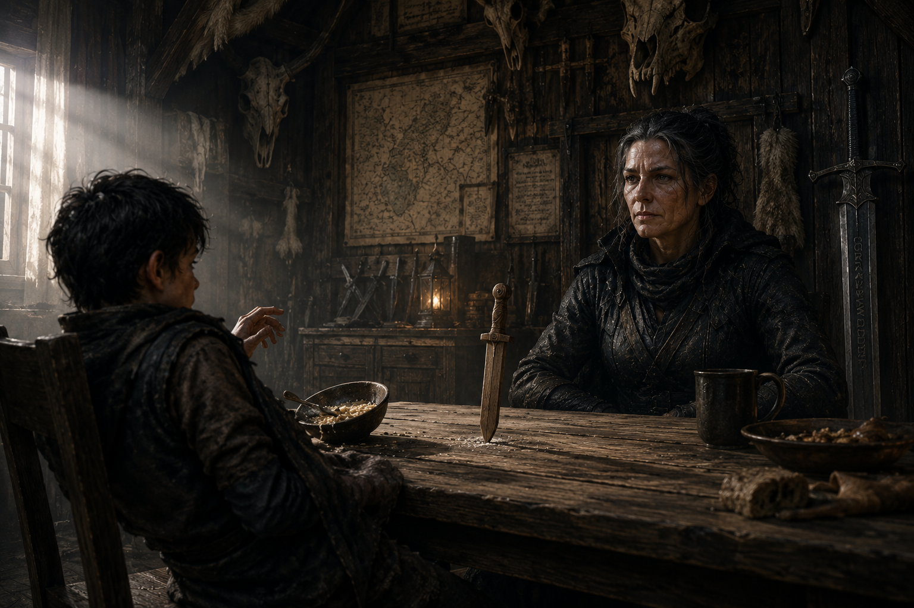
Elira Voss · First Day of TrainingThe training nearly killed him repeatedly.
Elira did not teach like soldiers.
Soldiers taught formations.
Obedience.
Battlefield order.
Elira taught survival.
Rayden learned how to break fingers during grapples.
How to choke larger opponents using leverage.
How to dislocate shoulders.
How to stab upward beneath jawlines.
How to use momentum instead of strength.
Every mistake hurt.
Elira beat him bloody with wooden staffs whenever his guard dropped.
Sometimes she attacked him randomly while he slept.
Sometimes during meals.
Once while he bathed in freezing river water.
“The world doesn’t announce violence politely.”
Wrestling became his strongest discipline fastest.
Rayden lacked size.
Lacked reach.
So Elira turned him into something harder to predict.
Close-range aggression.
Grappling.
Momentum reversals.
Joint destruction.
She taught him how larger enemies moved before attacking.
How weight shifted.
How balance failed.
At thirteen years old, Rayden could already throw grown men onto stone hard enough to fracture ribs.
Elira called that:
“adequate.”
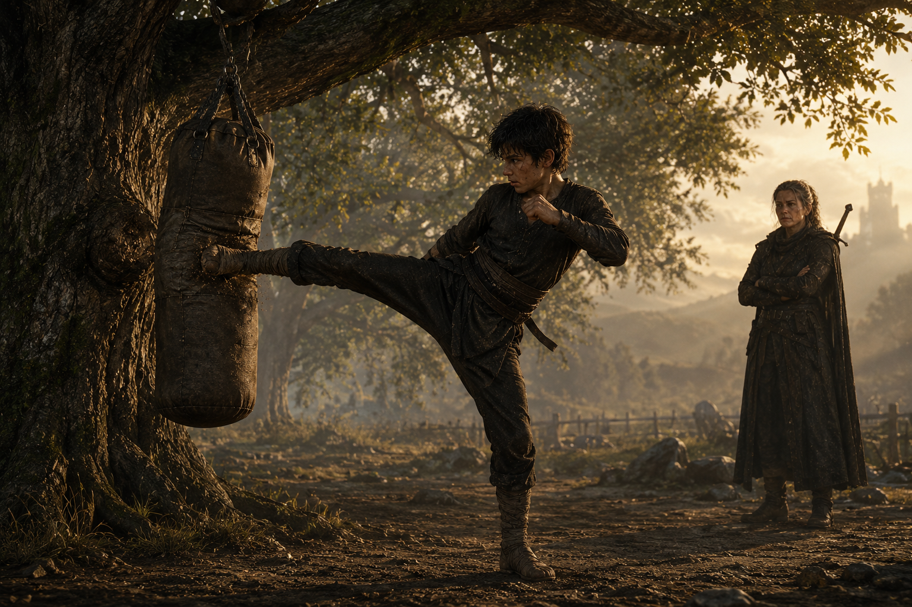
Elira Voss · The World Doesn't Announce Violence PolitelyThe adventurer world revealed itself slowly afterward.
Elira took him into guild halls across the southern territories where monster hunters, dungeon raiders, mercenaries, scouts, battlemages, thieves, and healers traded contracts beneath alcohol smoke and bounty boards.
Rayden learned quickly:
Most adventurers died young.
Low-rank dungeons still killed experienced people.
Healers were worth more than armored soldiers.
Magic users could change entire battles.
Corrupted dungeons occasionally produced things better left unnamed.
Guild halls smelled like wet leather, blood, cheap ale, and exhaustion.
Rayden liked them immediately.
At least adventurers were honest about danger.
He met Elira’s daughter during his second month there.
And immediately disliked her.
Selene Voss stood leaning against the guild entrance wall cleaning blood from a short blade when Elira dragged Rayden inside after training.
She looked around seventeen.
Auburn-brown hair tied behind her shoulders.
Amber eyes.
Slim athletic frame hidden beneath layered travel cloaks.
Medical pouches lined her waist beside combat knives and rune-marked bandages.
A faded scar crossed her left wrist from an old magical backlash injury.
Unlike Elira, Selene smiled easily.
Unlike Rayden, the smile reached her eyes.
That annoyed him instantly.
Selene studied him for several seconds.
“This is the alley corpse you brought home?”
Elira dropped monster contracts onto the guild counter.
“He bites.”
“Try not to lose fingers.”
Selene smirked.
“He looks feral.”
Rayden answered immediately.
“You look expensive.”
Selene laughed hard enough to nearly choke.
Elira looked exhausted instantly.
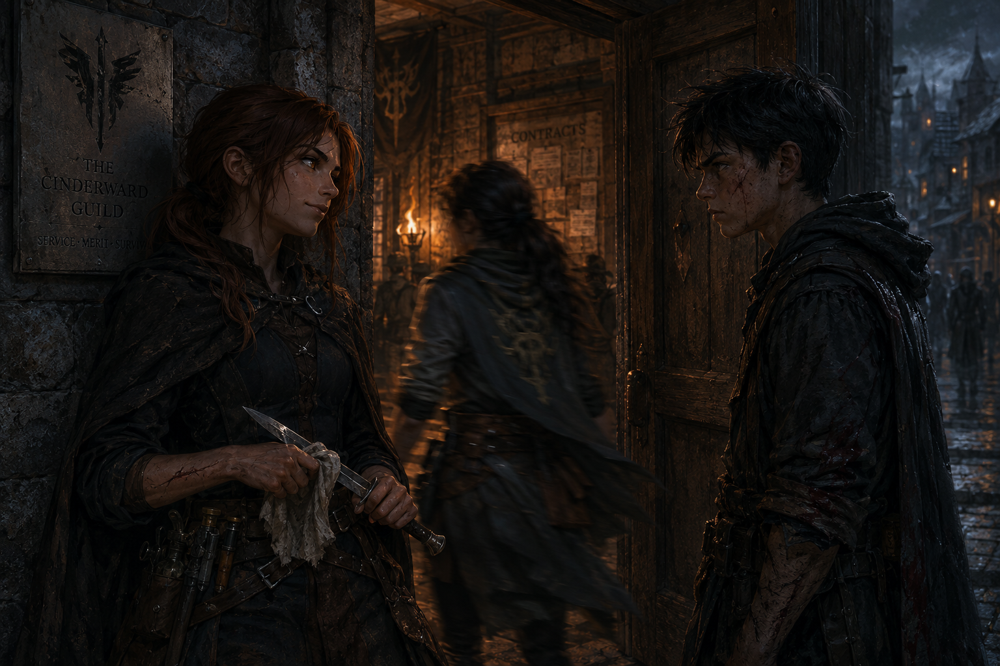
Selene Voss · First MeetingTheir relationship improved slowly.
Mostly because Elira forced them onto training contracts together.
Selene specialized in hybrid healing magic and close combat support.
Unlike traditional healers, she fought inside combat zones directly.
Barrier magic.
Rapid treatment.
Short blade counters.
Emergency stabilization.
She moved through battlefields like someone stitching broken moments back together before death fully arrived.
Rayden eventually trusted her enough to stop sleeping with a knife in hand.
That alone took nearly a year.
The nightmares never fully stopped.
Some nights Elira found Rayden awake outside the lodge gripping training knives hard enough to split skin across his palms.
Some nights Selene heard him screaming Garrick’s name through the walls.
Neither spoke about it directly.
People surviving dark places often respected silence more than comfort.
Training ended officially two years later.
Rayden was fourteen.
Taller now.
Lean muscle replacing starvation.
Scars crossing both hands.
Movement sharper.
Eyes colder.
But alive.
Dangerously alive.
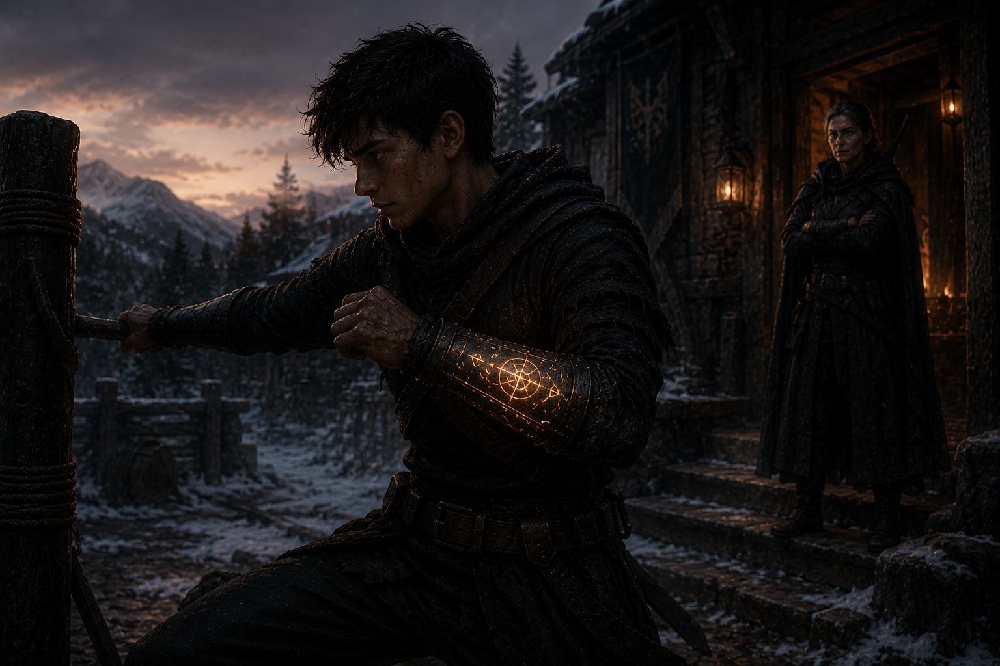
Rayden Cale · Year 1034 · After Two YearsElira summoned both disciples outside the lodge at dawn during first snowfall.
Two wrapped bundles rested beside her chair.
She looked older that morning somehow.
Tired in ways combat scars never caused.
She handed the first bundle to Rayden.
Inside rested a black steel bracer covered in ancient grappling runes.
Compact launcher mechanisms lined the forearm.
Thin enchanted chain rested coiled beneath layered plates.
Rayden stared silently.
“Vossfang Bracer,”
Elira said.
“Pulled me out of six dungeon collapses.”
“Works on will activation.”
“Stone. Wood. Monster flesh. Doesn’t care.”
“Try not to kill yourself learning momentum.”
Rayden equipped it carefully.
The runes glowed faintly beneath his skin.
For the first time since Garrick died, he smiled slightly.
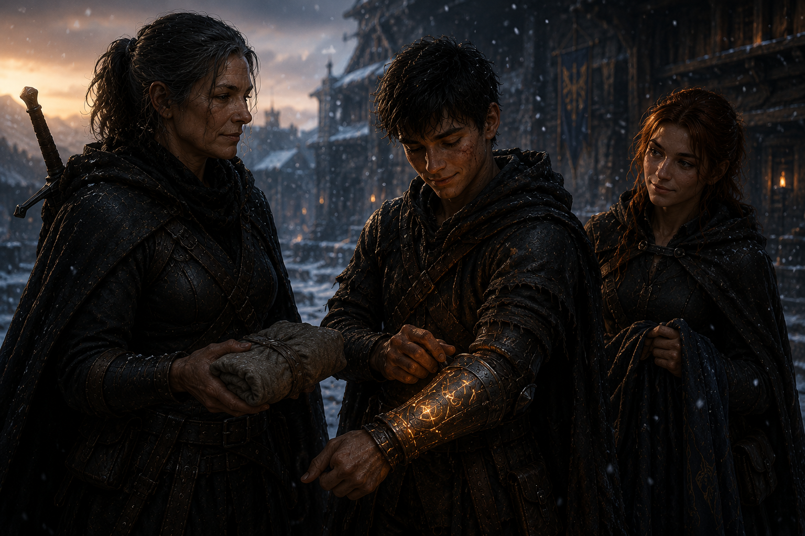
Vossfang Bracer · The First Smile Since GarrickSelene received the second gift.
A dark silver-threaded cloak folded beneath protective leather wrapping.
Selene immediately recognized it.
“No way.”
Elira shrugged.
“You’re fast enough now.”
The cloak shimmered once beneath lantern light before vanishing entirely for several seconds.
Selene laughed like a child seeing magic for the first time again.
“Shadeveil…”
“You kept this?”
“Thought about selling it once,”
Elira muttered.
“Then I remembered I hate merchants.”
That evening, Elira walked both of them toward the adventurer guild beneath falling snow.
The streets bustled with mercenaries, hunters, caravan guards, battlemages, and exhausted dungeon survivors dragging monster corpses toward appraisal stations.
The world suddenly felt much larger than Oaksmane.
More dangerous too.
Elira stopped outside the guild entrance.
For a long moment she simply looked at them.
Not as children anymore.
As adventurers.
As weapons the world would eventually point somewhere.
“The world out there is cruel.”
“Dungeons are crueler.”
“People are worst of all.”
“So survive long enough to become difficult to kill.”
Then she shoved the guild doors open.
And Rayden Cale stepped into the adventurer world for the first time.
VII. Ash and Ember
Sundered Age — Year 1034
The Adventurer Guild of Westreach smelled like blood, wet leather, old ale, and exhaustion.
Rayden liked it immediately.
The guild hall occupied a converted stone warehouse near the outer trade roads where caravans, mercenaries, monster hunters, smugglers, battlemages, and desperate men gathered beneath the same roof pretending they were different professions.
Massive contract boards covered the walls.
Monster skulls hung from ceiling beams.
Half the people inside carried visible scars.
The other half carried hidden ones.
Rayden stood beside Selene beneath the registration counter while snow melted from their boots onto the floorboards.
The clerk looked them over once.
Young.
Poor equipment.
No official ranking.
Another pair of hopeful idiots likely to die inside caves for copper rewards.
Guild halls saw dozens every month.
“Names?”
“Rayden Cale.”
“Selene Voss.”
The clerk continued writing lazily.
“Specialties?”
Rayden answered instantly.
“Killing things.”
Selene closed her eyes slowly.
“He means frontline combat.”
“I’m support healer and barrier magic.”
The clerk finally looked interested.
Healers mattered.
Most adventurer parties would rather lose a swordsman than a competent healer.
They started with sewer contracts.
Everyone did.
The first dungeon beneath Westreach contained little more than oversized corpse-rats, flooded tunnels, and enough disease to kill careless adventurers slower than monsters would.
Rayden almost died anyway.
Not from monsters.
From impatience.
He charged too aggressively into a narrow tunnel system and triggered a nest collapse filled with plague-rats the size of hunting dogs.
The creatures poured through darkness shrieking violently while diseased saliva sprayed across stone.
Selene barely erected a barrier in time before the first wave hit them.
“RAYDEN!”
He ignored her entirely.
Vossfang launched from his wrist with a metallic snap and buried into the tunnel ceiling.
Rayden swung upward above the swarm, flipped across the narrow corridor, and dropped directly into the middle of the nest with both blades moving.
Blood exploded across the walls.
Rotting rat corpses burst apart beneath steel.
One creature leapt onto his back and nearly tore out his throat before Selene drove a glowing combat knife through its skull from behind.
Moments later both of them stood knee-deep in twitching corpses while sewer water turned pink around their boots.
Selene stared at him breathing hard.
“You are clinically insane.”
Rayden wiped blood from his face.
“We survived.”
“That’s apparently your answer to everything.”
He shrugged.
It was.
Months passed in contracts and violence.
Goblin nests.
Bandit camps.
Escort routes through monster territory.
Ruined crypts filled with corpse-eaters.
Westreach’s surrounding frontier existed in permanent negotiation with death.
Adventurers simply charged extra for entering the argument willingly.
Rayden developed a reputation quickly.
Not because he was strongest.
Because he fought incorrectly.
Most swordsmen kept distance from large monsters.
Rayden climbed them.
Ogre hunts became infamous after witnesses watched him fire Vossfang into a charging beast’s shoulder before launching himself upward across its body like a predator attacking larger prey.
He blinded the creature by driving steel through one eye socket while hanging from the side of its skull.
Another time he severed a swamp troll’s hamstring tendons before grappling beneath its torso and cutting upward through exposed arteries while the monster screamed itself to death in black water.
Older adventurers began calling him:
“The Wall-Climber.”
Rayden hated the nickname immediately.
Which guaranteed it survived.
Selene became his opposite in battle.
Where Rayden moved violently, she moved precisely.
Where he advanced recklessly, she stabilized chaos around him.
Barrier magic shimmered around collapsing formations seconds before impact.
Healing light closed wounds mid-combat.
Her blades appeared only when enemies broke too close.
Together they became frighteningly synchronized.
Rayden stopped needing verbal warnings.
Selene already knew where he intended to move.
Selene stopped fearing monster charges.
Rayden was already intercepting them.
They fought like two survivors trying desperately to keep the other alive.
Because they were.
Their first real payment went toward a room at an upper-floor tavern overlooking Westreach’s eastern canal district.
The room was tiny.
One bed.
One stove.
One cracked window.
But it had heat.
To Rayden, that still felt luxurious.
The romance began quietly.
Not through declarations.
Through survival.
Selene stitched wounds while Rayden slept half-conscious after contracts.
Rayden sharpened her blades before difficult hunts without mentioning it.
They shared meals because separate portions cost more.
Shared blankets during winter contracts because frontier lodges froze after midnight.
Sometimes Rayden woke during storms to find Selene asleep against his shoulder beside dying campfires while monster howls echoed through distant forests.
And for the first time since Oaksmane, he no longer felt completely alone.
The first time they slept together happened after the Blackroot Crypt contract.
Neither discussed it beforehand.
The dungeon had nearly killed them both.
Blackroot Crypt sat beneath an abandoned monastery where failed burial rituals corrupted entire underground chambers.
The dead there did not remain properly dead.
Some fused together.
Some crawled without lower bodies.
Some still whispered through melted mouths while trapped inside walls of blackened flesh.
Rayden never forgot the smell.
Rot.
Wet stone.
Human organs left too long underground.
Halfway through the expedition they discovered another adventurer party fused into the crypt interior itself.
Living.
Barely.
One woman’s torso protruded from a wall of pulsing flesh while her lower body had already been absorbed entirely into the dungeon growth.
Her eyes still moved.
She begged Selene to kill her before the crypt finished consuming the rest.
Selene cried afterward while cleaning blood from her hands.
Rayden sat beside her silently for almost an hour.
Neither spoke much on the journey home.
That night rain hammered against the tavern windows while Selene sat shirtless beside the stove treating claw wounds across Rayden’s chest.
Her fingers shook slightly.
Not from fear.
From delayed horror.
Rayden noticed immediately.
“You saved them.”
Selene laughed bitterly.
“I killed them.”
“You freed them.”
She looked at him then.
Really looked.
And suddenly the distance between them disappeared.
The kiss tasted faintly of blood and cheap whiskey.
Neither cared.
People surviving violent worlds learned quickly not to postpone warmth unnecessarily.
Afterward Selene rested against his chest while rain struck the windows softly beyond the candlelight.
Rayden stared at the ceiling for a long time listening to her breathing.
Eventually Selene traced the scars across his ribs quietly.
“You never talk about Oaksmane.”
Rayden became still.
For several seconds she thought he might pull away.
Instead he whispered:
“There’s nothing there worth remembering.”
Selene understood immediately that meant the opposite.
Their first truly horrific contract arrived three months later.
The guild called it:
Mournhollow Sink.
Low casualty estimate.
Minor corruption signs.
The report lied about all of it.
The dungeon entrance sat beneath collapsed quarry ruins two days north of Westreach.
The corruption began immediately after entry.
The walls breathed.
Organic veins pulsed beneath stone.
Entire chambers smelled like infected wounds.
Deeper below they found missing adventurers hanging cocooned from ceiling growths while parasitic organisms slowly hollowed them alive from the inside.
Some victims were still conscious.
One begged Rayden to cut off his own legs before the corruption spread higher.
Another tried ripping his own face open to remove things moving beneath the skin.
Selene nearly vomited.
Rayden simply grew colder.
The dungeon core itself resembled a gigantic pulsating heart fused into the cavern floor.
When they destroyed it, the entire chamber began collapsing instantly.
A corrupted crawler the size of a carriage erupted from beneath the floor and pinned Selene against falling stone before she could escape.
The creature’s feeding limbs pierced through her side armor.
Blood exploded across the cavern.
Selene screamed.
Rayden moved before thought existed.
Vossfang launched.
The chain wrapped around a hanging rock column above the monster.
Rayden used the momentum violently, swinging through the collapsing cavern at full speed before driving both blades through the creature’s skull hard enough to split bone apart.
The impact snapped one sword completely.
Black blood sprayed across his face.
The dying creature crashed sideways while Rayden dragged Selene free moments before the ceiling collapsed behind them.
They escaped the dungeon half-buried in blood, dust, and monster remains.
Selene collapsed outside the entrance from blood loss while rain poured over the ruined quarry.
Rayden knelt beside her breathing hard enough to shake.
For several terrifying seconds he genuinely believed she would die there.
Something inside him nearly broke again.
Selene noticed.
Even half-conscious, she managed a weak smile.
“You look worse than I do.”
Rayden grabbed her hand hard enough to hurt.
“Don’t.”
Just one word.
But she understood everything inside it.
By fifteen, Rayden and Selene had become recognized names within Westreach’s lower and mid-rank adventurer circles.
Not famous yet.
But known.
The Wall-Climber and the Lantern Veil.
The violent swordsman who climbed monsters.
The healer who fought beside the frontlines instead of behind them.
Together they survived contracts many older adventurers refused entirely.
And slowly, dangerously...
Hope returned to Rayden Cale.
Which made the future crueler than either of them understood yet.
VIII. Dawnpiercer
Sundered Age — Year 1036
The rumors began with screams beneath stone.
Three mining crews vanished near the northern ridge roads outside Westreach after a winter earthquake collapsed part of the old mountain basin.
At first people blamed cave-ins.
Then the bodies started returning.
Not alive.
Not entirely dead either.
The first survivor stumbled into Westreach at dawn wrapped in blood-soaked priest cloth with both hands burned black to the wrist.
Witnesses claimed he kept repeating the same sentence over and over until his throat failed.
“The guardians still pray.”
He died before sunset.
Two more adventurer parties disappeared afterward.
The guild officially classified the newly exposed ruins as:
HOLLOWWATCH
Ancient fortress-city.
Unknown origin.
Extreme casualty risk.
The reward tripled within six days.
Elira Voss refused the contract immediately.
That alone frightened Selene.
Rain hammered against the lodge roof while Elira stared silently at the Hollowwatch request spread across the table.
The old adventurer’s expression darkened more with every line she read.
“Holy ruin.”
“Underground cathedral structure.”
“Guardian architecture.”
“Corruption traces.”
Elira dropped the parchment.
“That combination kills people.”
Rayden leaned against the wall nearby cleaning Vossfang carefully.
“Then why’s the guild still sending parties?”
Elira looked directly at him.
“Because desperate people will crawl into hell if someone promises enough coin.”
Rayden said nothing.
Which told Elira exactly what he was thinking.
“No.”
Rayden looked up.
“You didn’t even ask.”
“I don’t need to.”
“You’ve had that look since the announcement.”
Selene quietly watched both of them from beside the stove.
She knew the expression too.
Rayden wore it whenever strength appeared somewhere dangerous enough to possibly kill him.
“We’re not prepared for something like Hollowwatch,”
Selene said carefully.
Rayden finally answered.
“Then we prepare.”
Elira slammed her cup onto the table hard enough to crack wood.
“No.”
“You survive.”
“There’s a difference.”
Three days later Rayden accepted the contract anyway.
The recruitment happened inside the Westreach Guild Hall beneath torchlight and alcohol smoke.
The moment Hollowwatch’s reward reached upper silver-tier range, experienced adventurers started pretending they had never been afraid of it.
Fear always became negotiable when enough money entered the conversation.
The first to join was Dorun Graymaw.
A dwarf built like collapsed stone walls.
Forty-one years old.
Heavy shield specialist.
Veteran tunnel fighter.
His beard carried iron rings etched with old clan marks, and his left ear was missing entirely from some forgotten battlefield.
Dorun watched Rayden during recruitment for nearly a full minute before speaking.
“You move like a man trying to outrun death itself.”
Rayden shrugged.
“Hasn’t caught me yet.”
Dorun laughed once.
“Aye.”
“That’s usually what the dangerous ones say.”
Nyssa Veil joined next.
Nightborn Human.
Scout.
Trap specialist.
Her black leather gear carried more hidden knives than visible ones, and silver tattoos curled beneath one eye like spilled ink.
Nyssa smiled constantly.
Never sincerely.
“Hollowwatch pays enough that I’m willing to risk ancient curses.”
“Not enough that I’m willing to trust optimistic people.”
Her eyes drifted toward Rayden.
“You look extremely optimistic about violence.”
Selene answered before Rayden could.
“He’s worse than that.”
The third recruit drew attention immediately.
Moon Elf.
Tall.
Silver-haired.
Elegant in the way ancient forests felt elegant before something killed you inside them.
Tharel Ethen carried a rune-carved longbow across his back and spoke with the calm precision of someone educated far beyond Westreach frontier life.
Several humans inside the guild stared openly.
Moon Elves rarely left eastern territories willingly.
Tharel studied the Hollowwatch contract quietly before speaking.
“These symbols are pre-Sundered.”
“Older than most surviving kingdoms.”
Nyssa raised an eyebrow.
“You can read them?”
“Partially.”
His eyes shifted toward Rayden briefly.
“And if the rumors are accurate...”
“Something sacred still sleeps beneath that ruin.”
The final recruit arrived carrying an axe larger than some tavern tables.
Korr Vash.
Orc.
Thirty-four years old.
Frontline berserker.
Several adventurers moved away instinctively when he approached.
Korr ignored them.
His armor was old battlefield steel repaired dozens of times, and ritual scars covered both arms beneath sleeveless leather plating.
He sat heavily beside Rayden.
“You’re the climber.”
Rayden nodded once.
“You’re the orc.”
Korr stared at him for two seconds.
Then laughed loud enough to shake mugs nearby.
“I like him.”
The journey north took four days through abandoned military roads swallowed slowly by snow and dead forest.
As they traveled, the world around Hollowwatch changed subtly.
Birdsong disappeared first.
Then animal tracks.
Even the wind felt quieter there.
Like the mountain itself was holding breath.
They found the first corpse two miles from the ruins.
An adventurer frozen against a tree trunk with both hands clasped together in prayer.
The flesh beneath his armor had turned black.
Holy symbols were carved into his own chest repeatedly using broken fingernails.
Selene crouched beside the body silently.
“He did this to himself.”
Tharel’s expression darkened.
“Something inside Hollowwatch breaks people before it kills them.”
The ruins appeared at dusk.
And every member of the party stopped speaking immediately.
Hollowwatch was enormous.
Half-buried beneath collapsed mountain stone and centuries of snow.
Broken cathedral towers rose from the earth like gravestones for forgotten gods.
Gigantic statues of armored knights lined the outer approach.
Most no longer possessed heads.
The remaining ones stared toward the mountain entrance with expressions twisted by time and erosion into something mournful.
Ancient banners still hung frozen against shattered walls.
No wind moved them.
“By the old gods...”
Dorun whispered.
Korr tightened his grip on the axe handle slowly.
Even Nyssa stopped smiling.
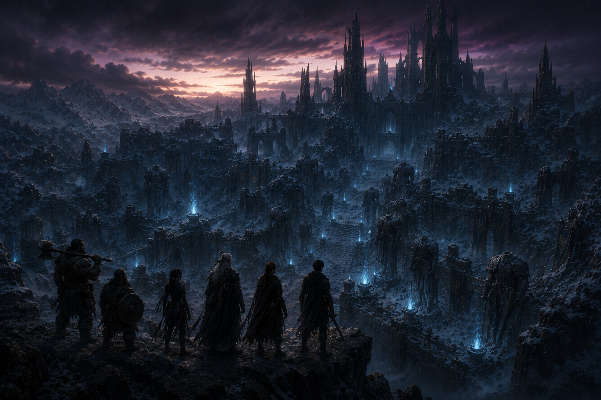
Hollowwatch · Year 1036 · Something Holy and DeadThe entrance descended beneath a collapsed holy courtyard illuminated faintly by pale blue fire burning from ancient wall braziers that should not still exist.
Yet they did.
Something below remained alive enough to maintain them.
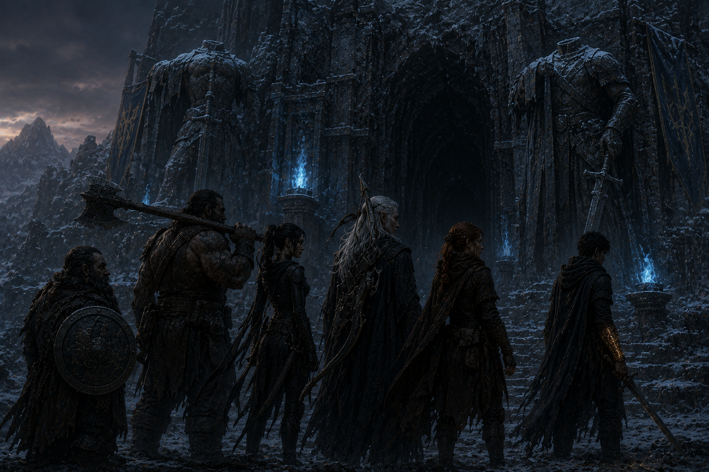
The Six · Hollowwatch ThresholdInside Hollowwatch, silence became oppressive.
Not natural silence.
Buried silence.
The kind found inside tombs large enough to become cities.
The deeper halls resembled a dead empire preserved beneath stone.
Massive prayer chambers.
Broken stained glass depicting armored guardians.
Ancient murals showing soldiers fighting towering shadow-like creatures beneath blackened skies.
Rayden noticed something unsettling immediately.
The warriors in those murals did not fight for conquest.
They fought protecting civilians behind them.
Shield walls.
Evacuations.
Last stands.
Hollowwatch had been built for defense.
The first undead attacked near the lower reliquary halls.
Former guardians.
Still wearing ancient silver armor fused directly into rotting flesh.
Their eyes glowed faint gold beneath cracked helms while broken prayers escaped their ruined throats.
“...hold...”
“...the line...”
“...protect...”
Then they charged.
The battle exploded violently.
Dorun slammed forward first, shield crashing against ancient steel hard enough to shake the corridor.
Korr’s axe split one guardian nearly in half from shoulder to hip, spraying blackened organs across cathedral stone.
Tharel’s glowing arrows punched through undead eye sockets with surgical precision.
Nyssa vanished into shadows entirely before reappearing behind another guardian to drive twin blades between exposed armor gaps.
And Rayden...
Rayden climbed.
Vossfang launched upward.
The chain hooked around a hanging cathedral support beam as Rayden swung over the charging undead formation before dropping feet-first onto one guardian’s shoulders.
Steel plunged downward through the helmet seam.
The impact shattered ancient vertebrae.
Before the corpse fully fell, Rayden already launched himself toward the next target.
Movement.
Momentum.
Violence.
Elira’s training lived inside every strike.
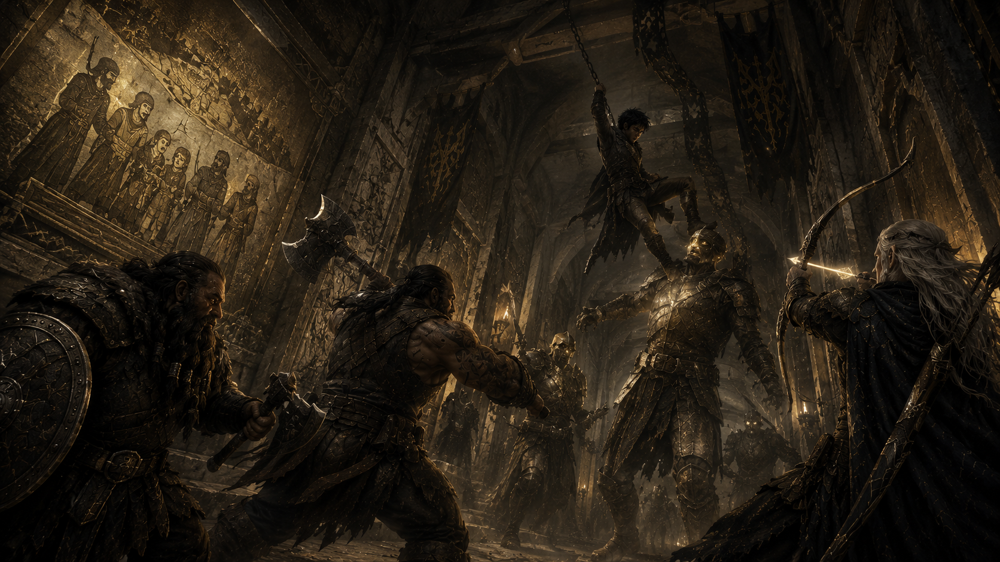
The Guardian Corridor · Combat in a GraveAfter the battle, Selene treated wounds near a broken chapel while snow drifted silently through collapsed ceiling arches overhead.
Korr sat nearby cleaning gore from his axe.
“You fight angry.”
Rayden looked up.
Korr shrugged.
“Not criticism.”
“Observation.”
For a moment neither spoke.
Then the orc added quietly:
“Angry men survive battles.”
“Sometimes.”
“They rarely survive peace.”
Rayden remembered that sentence years later.
That night the party camped inside a ruined prayer hall beneath shattered celestial murals.
The fire burned low.
Outside the chamber, distant chanting echoed through Hollowwatch’s lower depths.
No living voices created it.
Yet it continued anyway.
Selene sat beside Rayden beneath shared blankets while the others slept nearby.
The cold made their breaths visible.
For once Rayden looked uncertain.
Not afraid exactly.
Something worse.
Haunted.
Selene noticed immediately.
“You can still leave.”
Rayden stared toward the darkness beyond the chamber.
“No.”
“Why?”
Long silence followed.
Finally:
“Because if strength like this exists...”
“I need it before someone worse finds it first.”
Selene leaned against him quietly afterward.
Neither noticed Tharel awake nearby listening silently from the shadows.
The deeper levels of Hollowwatch had stopped resembling a fortress.
Now they resembled a wound.
The architecture changed first.
Smooth cathedral stone gradually disappeared beneath black organic growth spreading across walls and pillars like diseased muscle tissue.
Veins pulsed slowly beneath the surfaces.
Breathing sounds echoed through corridors with no visible source.
Ancient holy statues had fused into the flesh itself — stone faces half-submerged inside living corruption while frozen expressions screamed silently from the walls.
The deeper they descended, the warmer Hollowwatch became.
Like walking into the throat of something enormous.
Nyssa stopped joking entirely.
Even Korr’s usual calm confidence had sharpened into tension.
Only Tharel appeared unsurprised.
The Moon Elf studied the corrupted walls with growing dread.
“This ruin was not consumed.”
“It was infected.”
Rayden looked toward him.
“What’s the difference?”
Tharel’s silver eyes darkened.
“One dies naturally.”
“The other spreads.”
They found the next adventurer party near the lower sanctum stairs.
Or parts of them.
The corpses had become embedded into the walls themselves.
Not hanging.
Absorbed.
Arms protruded from pulsating flesh.
Faces remained half-visible beneath translucent organic membrane.
One man’s jaw still moved weakly despite most of his torso already disappearing inside the living wall growth.
His eyes rolled desperately toward the party as they approached.
“Please...”
Blood bubbled from his mouth.
“Please don’t leave me awake.”
Selene froze.
Nyssa quietly looked away.
Dorun lowered his shield slowly.
Korr stepped forward without hesitation and buried his axe through the man’s skull in one clean strike.
Silence followed.
The wall continued pulsing afterward.
“That thing’s learning,”
Nyssa whispered.
She pointed toward the organic growth.
Human faces were forming beneath the flesh now.
Dozens of them.
Moving slightly.
Rayden’s stomach tightened.
For the first time since Oaksmane, fear returned properly.
Not fear of death.
Fear of becoming trapped inside something worse.
The lower sanctum entrance stood beyond a massive circular chamber lined with gigantic knight statues kneeling toward a sealed cathedral gate.
Ancient runes glowed faint gold across the floor.
Most had already been partially corrupted by black vein-like growth spreading outward from beneath the gate itself.
Tharel knelt near the symbols immediately.
His expression changed the moment he translated them.
“Guardians of the Final Dawn.”
“Those who stand here stand for all.”
Rayden stared toward the sealed doors.
“Sounds dramatic.”
Tharel looked at him sharply.
“You don’t understand.”
“This was never a dungeon.”
“It was a fortress designed to hold something back.”
The cathedral gate opened by itself.
Slowly.
Stone grinding against stone echoed through the chamber like thunder.
And something inside Hollowwatch awakened.
The screaming started immediately afterward.
Not human screams.
Metallic.
The knight statues surrounding the chamber began moving.
Ancient stone cracked apart as armored guardian constructs tore themselves free from centuries of stillness.
Golden light burned behind empty helmets.
Gigantic tower shields slammed into position across the chamber.
Ancient halberds lowered together.
Then the guardians charged.
The battle became chaos instantly.
Dorun met the first construct head-on with a shield impact violent enough to shake the floor beneath them.
Korr’s axe smashed into ancient armor, splitting one guardian’s shoulder apart in an explosion of sparks and broken stone.
Nyssa disappeared into the moving battlefield entirely while Tharel’s enchanted arrows punched glowing holes through construct joints.
And still more kept coming.
Rayden launched upward using Vossfang.
The chain hooked around a broken cathedral pillar as he swung over the advancing line before crashing feet-first into a guardian’s upper torso.
The impact cracked armor.
Rayden grappled onto the construct’s shoulders instantly, driving blades repeatedly into exposed rune seams while the massive guardian tried throwing him loose.
Stone fists shattered pillars around them.
Rayden kept climbing.
One construct reached Selene before anyone else could intercept.
Its halberd slammed downward hard enough to crater stone.
Selene barely avoided death by erecting a barrier at the final second.
The impact shattered the spell instantly.
The guardian raised its weapon again.
Korr intercepted it.
The orc hit the construct like a siege weapon.
His axe tore through one armored knee while roaring battle chants in a language none of them understood.
The guardian staggered.
Korr looked over his shoulder toward Selene.
“MOVE!”
Then three more constructs crashed into him simultaneously.
The corridor entrance behind them collapsed.
Dust exploded through the chamber.
Korr disappeared beneath stone guardians and falling debris together.
For several seconds his axe continued swinging through the dust cloud.
Then the movement stopped.
Silence hit Rayden harder than the battle itself.
Another person gone.
Another corpse buried beneath stone.
Another failure.
Something ugly moved inside him afterward.
“RAYDEN!”
Selene’s scream snapped him back.
A guardian’s halberd nearly removed his head before he twisted aside.
The blade shaved across his shoulder instead, tearing flesh open deep enough to expose bone.
Pain exploded through his body.
Rayden answered with violence.
Vossfang launched again.
The chain wrapped around the guardian’s neck as Rayden used the momentum to swing behind it before locking both legs around the construct’s upper torso.
Then he drove a dagger directly into the glowing core beneath its helmet.
The explosion of holy light blasted him backward across the chamber.
Rayden crashed against cathedral stone hard enough to crack ribs again.
And still he stood.
Because standing was what survivors did.
After the battle, only five remained.
Korr Vash did not rise again.
Dorun quietly removed the orc’s clan talisman from the collapsed rubble while Selene treated wounds nearby.
Nobody spoke for several minutes.
Finally Nyssa muttered:
“I hate heroic people.”
Tharel answered softly.
“No.”
“You hate surviving them.”
The cathedral beyond the gate waited in absolute silence afterward.
And somewhere deep below Hollowwatch...
Something ancient was still watching Rayden Cale approach.
The cathedral of Hollowwatch was still alive.
The realization came slowly.
Not through movement.
Not through sound.
Through pressure.
The deeper they descended beyond the sanctum gate, the more every corridor felt aware of them.
The walls pulsed faintly beneath ancient stone.
The air smelled of incense mixed with blood rot.
Broken prayer bells rang somewhere far below despite no wind existing underground.
And beneath all of it...
Something breathed.
The final cathedral chamber dwarfed everything above it.
Gigantic pillars vanished upward into darkness beyond sight.
Ancient holy banners hung in tatters from impossible heights.
Golden braziers still burned around the chamber perimeter after centuries underground.
At the center stood a colossal armored figure kneeling before a massive stone altar.
Its sword remained planted point-first into the floor.
Its shield rested beside it.
Neither had rusted.
Tharel stopped walking immediately.
His face had gone pale.
“By the stars...”
Even Dorun whispered quieter now.
“That’s no construct.”
No.
It wasn’t.
The kneeling figure wore ancient silver-white armor scarred by battles older than surviving kingdoms.
Great tears split the chestplate.
Black corruption veins crawled beneath portions of the metal.
Yet golden light still pulsed weakly through cracked rune channels across the armor.
The thing kneeling before the altar had once been human.
Or close enough.
Then the cathedral doors behind them slammed shut.
Every brazier erupted brighter instantly.
And the giant knight opened its eyes.
Gold.
Pure burning gold.
The pressure inside the cathedral became unbearable.
Selene nearly collapsed immediately.
Nyssa staggered backward.
Dorun raised his shield instinctively.
Only Tharel remained perfectly still.
Because the Moon Elf understood something terrifying before the others did.
“It’s testing us.”
The knight slowly stood.
The sound echoed across the cathedral like mountains shifting.
Nearly twelve feet tall.
Armor glowing faintly beneath corruption.
The gigantic shield alone looked larger than carriage doors.
And still the ancient guardian carried itself with exhaustion rather than aggression.
Like something that had stood watch too long.
The guardian’s voice rolled through the cathedral.
Not spoken aloud.
Felt.
WHO COMES BEFORE THE FINAL DAWN?
No one answered immediately.
Because every instinct inside them screamed to run.
Rayden stepped forward anyway.
“Adventurers.”
The guardian’s burning gaze fixed onto him.
FOR WHAT PURPOSE?
Rayden opened his mouth.
Stopped.
Because suddenly he realized he did not fully know anymore.
Strength?
Survival?
Revenge?
The answer tangled inside him.
Black corruption spread further across the guardian’s armor.
The cathedral trembled violently.
THE UNWORTHY SHALL NOT CLAIM THE DAWN.
Then the guardian attacked.
The first shield impact shattered stone across half the cathedral.
Dorun intercepted barely in time.
The dwarf’s shield screamed against the collision while blood exploded from his nose instantly.
“MOVE!”
The party scattered as the guardian’s greatsword crashed downward next.
The strike split the cathedral floor open completely.
Golden fire erupted through the fracture lines.
Rayden launched upward immediately.
Vossfang fired toward the cathedral rafters.
The chain snapped tight as he swung across the chamber directly toward the guardian’s upper body.
Steel collided against ancient armor.
Sparks exploded.
The guardian barely reacted.
One massive hand seized Rayden mid-air and hurled him through a stone pillar hard enough to collapse it entirely.
Pain detonated through his ribs.
Dust swallowed everything.
Selene’s barrier magic intercepted the next sword strike moments before Dorun died.
The barrier shattered instantly.
Selene coughed blood onto the cathedral floor.
Nyssa dragged her backward before the guardian’s shield smashed downward where they had stood.
Stone exploded.
Entire sections of cathedral flooring collapsed into darkness below.
Tharel’s arrows struck glowing seams beneath the guardian’s armor repeatedly.
For the first time, the ancient knight staggered slightly.
Golden light flickered.
Then corruption surged harder through its body.
The guardian roared.
And suddenly the cathedral changed.
Rayden’s surroundings vanished instantly.
Fire.
Screaming.
Smoke.
The orphanage burned around him again.
Children cried for help somewhere behind collapsing walls.
Marianne screamed through the flames.
Caelum vanished into smoke.
Rayden staggered backward breathing hard.
“No...”
The vision shifted.
Snow.
Execution platform.
Garrick kneeling beside the block while blood stained winter stone.
Halbrecht smiling from above.
The axe rising.
Again.
Again.
Again.
Every failure.
Every death.
Every helpless moment returned together.
The guardian’s voice echoed through the nightmare.
WHY DO YOU SEEK STRENGTH?
Rayden fell to one knee.
His hands shook violently.
Because part of him knew the answer already.
Hatred.
He wanted power so monsters like Halbrecht could never exist safely again.
So nobody could ever burn children and survive afterward.
So nobody could ever execute people like Garrick while crowds watched helplessly.
The hatred inside him was real.
Ancient.
Growing.
But beneath it...
Something else still lived.
Rayden saw Selene smiling beside campfires.
Elira teaching him how to survive.
Korr holding the corridor.
Marianne shielding children.
Garrick saying:
“Know what you’re protecting.”
The fire around him faded slowly.
Rayden stood.
His breathing steadied.
And finally he answered.
“So nobody helpless stands alone again.”
The vision shattered instantly.
Rayden returned to the cathedral mid-battle.
Just in time to see the guardian’s blade descending toward Selene.
He moved without hesitation.
Vossfang launched.
The chain wrapped around the guardian’s sword arm as Rayden used the momentum violently, swinging directly upward across the giant knight’s body.
He climbed.
Exactly as Elira taught him.
Stone-shattering force missed Selene by inches.
Rayden sprinted across the guardian’s shoulders while holy fire exploded around them.
The ancient knight tried grabbing him.
Too slow.
Rayden drove both blades directly into the corruption-vein spreading across the guardian’s neck.
Golden light erupted.
The guardian staggered violently.
Tharel’s final enchanted arrow struck the exposed core beneath the helmet seam at the exact same moment.
The cathedral exploded with blinding radiance.
Silence followed.
The guardian fell to one knee slowly.
The corruption retreated from portions of its armor.
And for the first time...
The ancient knight looked peaceful.
The massive figure reached toward the altar beside it.
Golden light spread across the cathedral floor.
Then the guardian placed one hand over its chest.
Like a soldier saluting another.
THE DAWN REMEMBERS.
The guardian collapsed afterward.
Stillness finally consumed Hollowwatch.
At the center of the altar rested the relic.
Dawnpiercer.
A silver-white greatblade surrounded by faint golden runes that pulsed like a heartbeat beneath the steel.
Beside it rested a massive shield scarred by ancient war damage yet somehow untouched by time.
Even dormant, the weapon radiated presence.
Not conquest.
Protection.
Rayden approached slowly.
The moment his hand touched the sword hilt, the cathedral erupted with golden light.
Visions flooded through him instantly.
Ancient defenders holding impossible lines.
Civilians evacuated beneath burning skies.
Guardians dying one after another while protecting people they would never meet again.
Last stands.
Sacrifice.
Duty.
Then silence.
Dawnpiercer accepted him.
The moment Dawnpiercer awakened, Hollowwatch began dying.
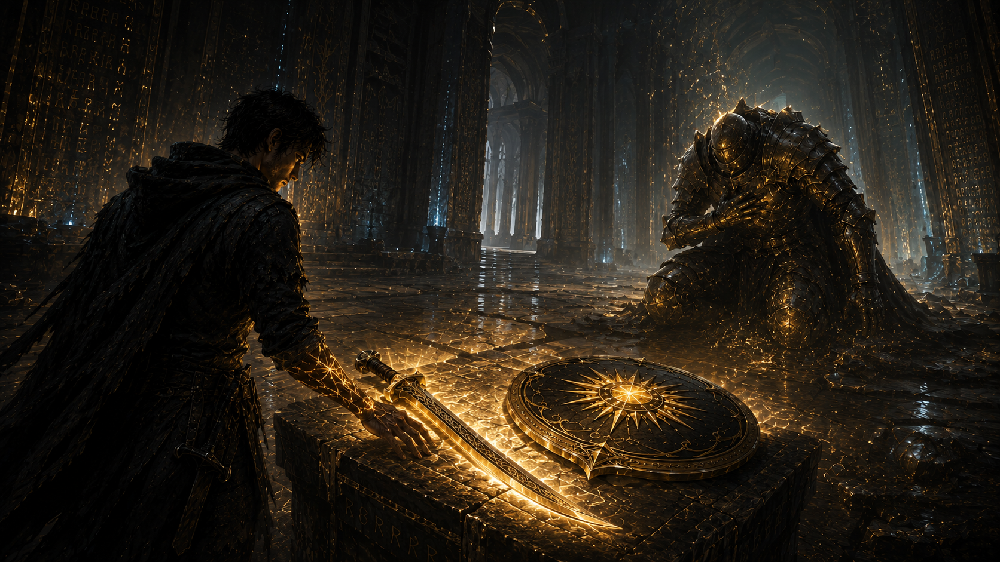
The Dawn Remembers · Hollowwatch SanctumThe cathedral shook violently.
Ancient pillars cracked apart.
Golden fire erupted through the floor seams.
The corruption spreading across the walls screamed.
Not metaphorically.
The flesh embedded into the cathedral actually screamed.
Hundreds of distorted human voices echoed together through Hollowwatch’s depths while the living corruption recoiled from the light pouring out of Dawnpiercer.
Entire sections of black organic growth ignited instantly.
The ruin had survived for centuries.
Now it was finally collapsing.
Rayden staggered backward as power surged through him violently.
The sword felt heavy.
Not physically.
Emotionally.
Like carrying the weight of every person who had once died protecting others beneath Hollowwatch’s banners.
Golden rune-light spread across his arm beneath the skin before fading slowly.
The shield beside the altar lifted on its own.
Then slammed against his forearm with a shockwave powerful enough to extinguish half the cathedral braziers.
Selene stared openly.
“Rayden...”
Even Nyssa looked unsettled now.
“That weapon just chose you.”
“I don’t know whether to congratulate you or run.”
Tharel approached the altar slowly.
The Moon Elf looked almost reverent.
“Dawnpiercer...”
“I thought it was myth.”
His silver eyes studied Rayden carefully afterward.
“No ordinary adventurer survives a relic trial.”
Rayden barely heard him.
Because the sword still whispered.
Not words.
Memories.
Echoes.
Ancient defenders standing against impossible darkness.
Shield walls refusing to break.
Men and women dying with their backs toward civilians instead of escape routes.
Dawnpiercer remembered all of them.
Then Hollowwatch roared.
The entire cathedral lurched sideways violently.
One of the massive support pillars collapsed into the abyss below.
Golden flames spread across the chamber ceiling while corrupted flesh peeled screaming from the walls.
Dorun looked upward once.
“We’re out of time.”
The escape became a war against the ruin itself.
The upper corridors collapsed one after another as the surviving party sprinted upward through falling debris and screaming cathedral halls.
Corrupted guardians wandered blindly through the chaos while holy fire consumed them alive.
Entire sections of Hollowwatch caved inward beneath mountain pressure.
And still the corruption kept trying to stop them.
Near the shattered reliquary halls, the walls themselves burst open.
Massive flesh-growth tendrils erupted outward covered in half-formed human faces screaming through stretched skin.
Nyssa barely avoided being dragged into the wall entirely.
Rayden intercepted instantly.
Dawnpiercer moved differently from ordinary steel.
Cleaner.
Faster.
The blade cut through corrupted flesh like sunlight through shadow.
Golden fire exploded from the strike.
The screaming growth recoiled violently while black blood sprayed across cathedral stone.
For the first time since entering Hollowwatch...
The corruption felt afraid.
Rayden noticed something terrifying then.
Dawnpiercer did not become stronger from hatred.
It became stronger every time he protected someone.
Every intercepted strike.
Every defensive movement.
Every moment he placed himself between danger and another person.
The relic was responding to instinct.
To purpose.
To Garrick.
The realization nearly broke him emotionally.
They reached the upper sanctum moments before the final collapse began.
The mountain itself was falling inward now.
Ancient statues shattered.
Cathedral ceilings collapsed behind them.
Entire stairways disappeared into darkness.
And still Hollowwatch screamed beneath the earth.
Near the final exit, Dorun suddenly stopped moving.
Blood soaked the dwarf’s beard heavily.
Only then did the others notice the massive shard of cathedral stone embedded through his lower side.
He had been carrying the injury silently for nearly half the escape.
Selene moved immediately.
“We can heal—”
Dorun grabbed her wrist firmly.
“No.”
His voice sounded tired now.
Older.
“Save the strength.” “You’ll need it outside.”
Rayden stepped forward.
“We carry you.”
Dorun looked at him for several seconds.
Then laughed weakly.
“Boy...”
“I weigh more than your entire tragic backstory.”
Even Nyssa almost smiled at that.
Dorun slowly removed the iron clan rings woven through his beard one by one.
Old dwarf-forged steel.
Scratched by battle.
Worn smooth by decades of survival.
He pressed them heavily into Rayden’s palm.
“Remember me, boy...”
Blood ran from the corner of Dorun’s mouth as another tremor shook Hollowwatch around them.
Yet somehow the dwarf still grinned.
“Remember your savior...”
“Hahahaha hahahahaha hahahaha—”
The laugh turned into coughing.
Dark blood splattered across the ruined sanctum floor.
Still, Dorun’s single remaining eye gleamed stubbornly beneath the collapsing cathedral light.
“If you ever meet my family...”
“Give them the rings.”
“Tell them Dorun Graymaw died standing.”
Another violent impact thundered through Hollowwatch.
The corrupted creatures screamed somewhere beyond the collapsing corridor.
Dorun slowly rose behind his shield one final time.
Old.
Bleeding.
Broken.
Yet still unmovable.
“Now go.”
“That’s an order.”
Rayden hesitated.
Again.
Another person staying behind.
Another sacrifice.
Another loss.
Selene grabbed his arm hard.
“RAYDEN!”
The dwarf roared as corrupted creatures burst through the collapsing corridor behind him.
Shield met claws.
Stone exploded.
Ancient battle chants echoed through the sanctum.
And for one final moment, Dorun Graymaw stood exactly like the guardians of Hollowwatch once had.
Holding the line.
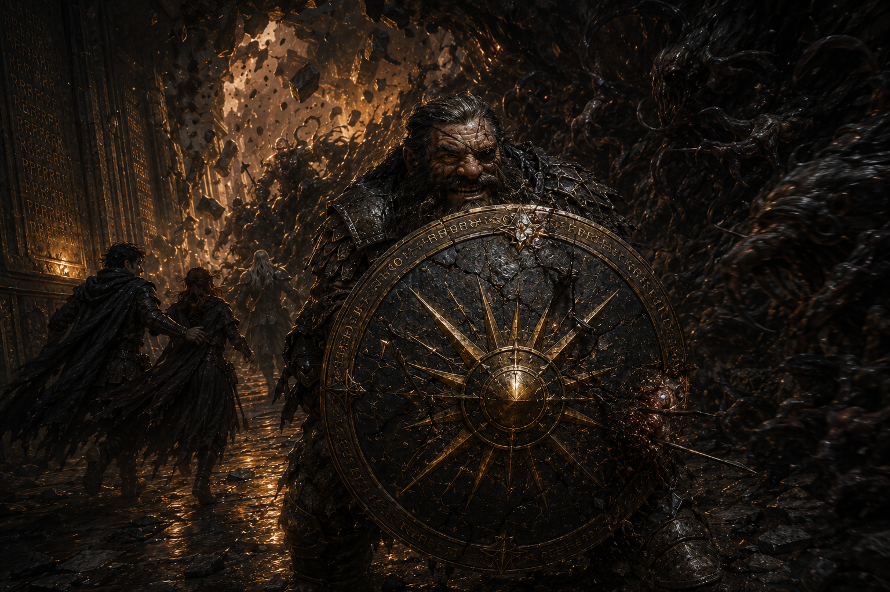
Dorun Graymaw · Tell Them I Died StandingThe survivors escaped seconds before the mountain collapsed entirely.
Snow exploded outward across the mountainside.
Stone thundered downward into the valley below.
Golden fire erupted briefly through the collapsing ruins before vanishing beneath rock forever.
Hollowwatch disappeared into the earth once more.
This time permanently.
For a long while, nobody spoke.
Cold mountain wind moved silently through the snowfields around them.
Selene sat beside a broken stone marker staring blankly at blood across her hands.
Nyssa smoked quietly while pretending not to shake.
Tharel stood facing the buried ruins with lowered head.
Even Rayden could not find words.
Because Hollowwatch had changed him.
Deeply.
Irreversibly.
When they finally returned to Westreach six days later, the guild hall fell silent.
Not because they survived.
Because of what Rayden carried.
Dawnpiercer radiated presence even wrapped in cloth.
Veteran adventurers stared openly.
Guild officers stood from their seats.
One old battlemage nearly dropped his drink after sensing the relic’s aura.
And slowly, quietly...
Rumors began spreading through Westreach.
The boy who survived Hollowwatch.
The swordsman chosen by an ancient relic.
The Wall-Climber carrying the light of dead guardians.
Rayden Cale was sixteen years old.
And for the first time in his life...
The world had started noticing him back.
IX. Temporal Frenzy
Sundered Age — Year 1036
Hollowwatch changed everything.
The guild stopped treating Rayden Cale like a reckless teenager afterward.
Veteran adventurers moved aside when he entered briefing halls.
Mid-rank mercenary captains started watching him carefully during combat evaluations.
Even guild officers lowered their voices whenever Dawnpiercer appeared near the contract boards.
Because relic-bearers rarely stayed ordinary for long.
Rayden hated the attention immediately.
Not because it frightened him.
Because it changed nothing important.
The dead still remained dead.
At sixteen, Rayden had already survived more violence than most soldiers twice his age.
Yet every victory only sharpened the same unbearable realization:
He still was not strong enough.
The nightmares worsened after Hollowwatch.
Now the guardian’s memories mixed with his own.
Sometimes Rayden dreamed of ancient shield walls breaking beneath black skies while civilians screamed behind them.
Sometimes he saw Garrick standing among the old defenders.
Sometimes he woke gripping Dawnpiercer hard enough to bleed.
Selene noticed the change first.
Rayden trained longer.
Slept less.
Fought harder.
There were moments during contracts where he moved so aggressively it almost looked self-destructive.
As though every battle secretly contained someone he failed to save already.
One evening after a wyvern extermination contract, Selene found him alone outside the guild sharpening Dawnpiercer beneath freezing rain.
Blood dripped slowly from his knuckles where the sword hilt had rubbed skin raw during training.
“You’re doing it again.”
Rayden did not look up.
“Doing what?”
Selene stepped closer.
“Trying to become strong enough to fight memories.”
For once, Rayden had no answer.
The Temporal Rift contract appeared three days later.
And immediately every experienced adventurer in Westreach wanted nothing to do with it.
The reports sounded impossible.
Scouts vanishing from open roads.
Hunters aging decades overnight.
Corpses discovered before the victims officially disappeared.
Entire patrols found frozen mid-motion like statues.
Worst of all:
Survivors described hearing their own footsteps several seconds before actually taking them.
The guild classified the anomaly as:
TEMPORAL RIFT EVENT
Potential dungeon formation.
Extreme magical instability.
Unknown threat classification.
Reward:
absurd.
Nyssa Veil nearly laughed when she saw the contract.
“No.”
“Absolutely not.”
“Hollowwatch already took years off my life.”
Yet somehow she still attended the expedition briefing anyway.
Mostly because she did not entirely trust Rayden to survive reality-breaking magic without supervision.
Tharel returned as well.
The Moon Elf’s fascination with temporal anomalies outweighed common sense.
“Time-afflicted ruins are exceptionally rare.”
“Usually because everyone dies before documenting them.”
Nyssa stared at him.
“You’re both clinically damaged.”
The new recruits arrived shortly afterward.
Varik Stonevein looked more mercenary captain than adventurer.
Bear-Kin.
Thirty-eight.
Massive frame wrapped in layered spear-war harnesses.
Gray fur lined portions of his jaw and neck while old battlefield scars crossed both hands.
Unlike Korr, Varik carried himself with disciplined military restraint.
His first words to Rayden were:
“I don’t work for glory.”
“I work for survival.”
Rayden respected him immediately.
The final member unsettled everyone except Tharel.
Lysara Quill arrived carrying enough magical equipment to resemble a walking laboratory.
Twenty-nine years old.
Human battlemage.
Temporal anomaly researcher.
Thin silver spectacles rested across sharp eyes that constantly studied everything around her like a puzzle worth dissecting.
She looked at Dawnpiercer for exactly three seconds before whispering:
“Interesting.”
Rayden instantly disliked her.
Selene disliked her faster.
The Temporal Rift lay beyond the northern frontier territories where abandoned war roads cut through dead valleys scarred by ancient magical battles.
The landscape itself felt wrong long before they reached the anomaly.
Birds avoided the region entirely.
Snow fell upward occasionally before correcting itself.
Shadows stretched in directions opposing the sunlight.
Even sound behaved incorrectly.
On the second night, Nyssa heard someone whisper her name beside the campfire.
No one had spoken.
Thirty seconds later, Varik actually said it.
The rogue immediately stopped eating.
“I officially hate this place.”
They found the first Rift victims near dawn.
Three mercenaries frozen beside the roadside.
Not dead.
Aged.
Their bodies looked eighty years older than the missing-person reports described.
Skin sagged.
Hair whitened completely.
Eyes collapsed inward from age deterioration.
One corpse still gripped a sword rusted by decades that technically had not happened yet.
Selene crouched beside the bodies slowly.
“These men disappeared last week.”
Lysara adjusted her spectacles with visible excitement.
“Localized acceleration.”
“Fascinating.”
Nyssa looked horrified.
“If you say fascinating one more time, I’m stabbing you.”
The Rift itself appeared at twilight.
And every instinct inside Rayden screamed danger immediately.
The anomaly floated above the valley floor like fractured glass suspended in air.
Reality bent around it unnaturally.
Snowflakes froze motionless near the edges before suddenly continuing movement again.
Light distorted.
Sound echoed before being created.
The world itself looked wounded there.
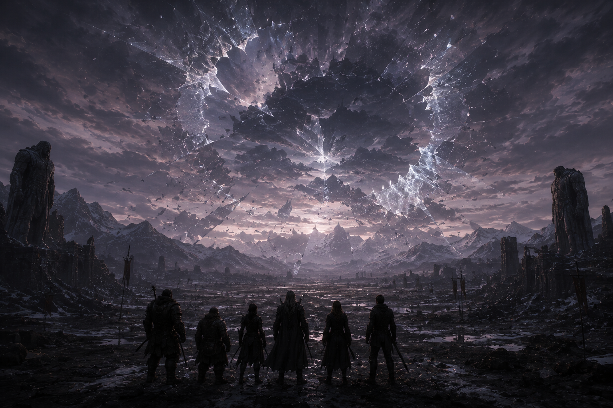
The Temporal Rift · Year 1036 · The World Itself Looked WoundedThen the monster attacked.
No warning.
No roar.
Just sudden movement.
A creature burst from the Rift distortion fast enough to appear almost invisible.
Long skeletal limbs.
Bone-white exoskeleton.
Multiple eyes flickering in and out of existence.
The thing moved incorrectly.
Not quickly.
Wrongly.
Varik barely raised his spear before the creature removed his left arm completely.
Blood exploded across the snow.
The severed limb landed fifteen feet away still gripping the weapon.
Varik screamed.
Then the scream repeated itself backwards.
Reality fractured.
The monster struck Nyssa before the first attack sound fully reached them.
Her body flew sideways through frozen air while blood droplets remained suspended motionless around her.
Tharel’s arrows fired.
The creature dodged before he released them.
Lysara shouted something about temporal displacement.
Rayden heard none of it properly.
Because suddenly...
Selene was directly in the creature’s path.
And Rayden had seen this before.
Too many times.
Fire.
Execution platforms.
Collapsing cathedrals.
People dying while he arrived too slowly.
Something inside him broke open.
The world stopped.
Not literally.
Worse.
Rayden’s perception accelerated violently beyond human limits.
Blood droplets hung suspended in air like floating rubies.
Snowflakes drifted individually.
Muscle tension beneath the creature’s limbs became visible before movement occurred.
He could see trajectories.
Momentum.
Intent.
Everything moved unbearably slow.
Except him.
Pain exploded instantly.
His nervous system screamed.
Blood vessels burst inside his eyes.
Muscles tore beneath the strain.
But Rayden moved anyway.
Vossfang launched.
The chain screamed through slowed air while Rayden accelerated across the battlefield in impossible motion.
Dawnpiercer ignited in golden light.
He intercepted the creature less than inches before impact reached Selene.
The monster turned toward him slowly.
Too slowly.
Rayden saw everything.
The weak point beneath its shifting jaw.
The delayed weight transfer.
The opening before the second strike.
He drove Dawnpiercer upward through the creature’s skull with enough force to split the upper body apart entirely.
Golden fire erupted through the Rift valley.
The monster died before normal time fully resumed.
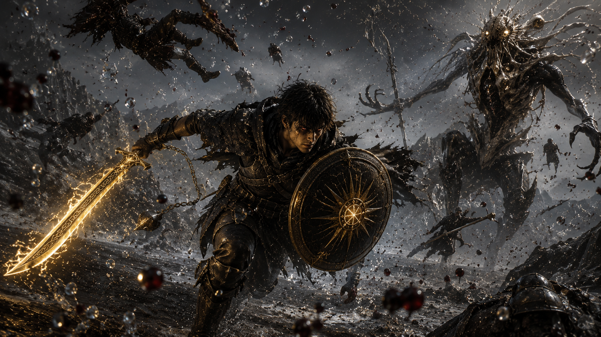
Temporal Frenzy · First Activation · The World Moved Too SlowlyThen reality snapped back into place.
Sound crashed into the world all at once.
Varik screaming.
Nyssa coughing blood.
Selene shouting Rayden’s name.
And Rayden himself collapsing into the snow.
Blood poured from both his eyes.
His entire body convulsed violently as shredded muscle fibers spasmed beneath the skin.
Dawnpiercer slipped from numb fingers.
For several horrifying seconds Rayden could not feel his own legs.
Lysara stared at him in genuine disbelief.
“No...”
“That’s impossible.”
Tharel’s expression looked equally disturbed.
“He accelerated perception itself...”
Nyssa whispered weakly:
“What the hell are you?”
Selene dropped beside Rayden immediately.
Healing magic spread desperately across torn muscles while her hands visibly trembled.
Because for a few brief moments...
Rayden had not looked human.
He had looked like violence moving faster than reality.
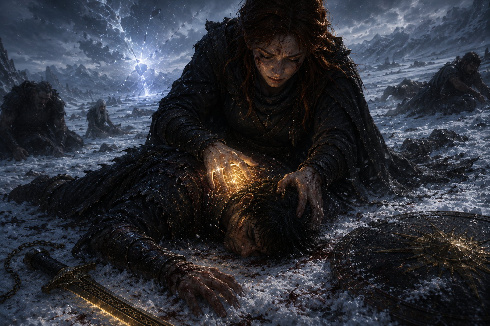
Aftermath · Selene Voss · The Person Who Pulls You BackLater that night beside the campfire, while the others slept uneasily nearby, Selene wrapped fresh bandages around Rayden’s bleeding hands in silence.
The firelight shook softly across her face.
Finally she whispered:
“You scared me.”
Rayden looked down at the blood staining the snow beneath his boots.
For once...
He was afraid too.
X. The Weight of Time
Sundered Age — Year 1036
Temporal Frenzy nearly killed him.
The party discovered this two hours after the battle.
Because Rayden stopped being able to walk.
The first collapse happened beside the northern ridge trail while snowstorms swallowed the Rift valley behind them.
One moment Rayden was moving silently beside Selene.
The next his legs simply failed.
He crashed face-first into the snow hard enough to smear blood across the ice.
Then the convulsions began.
Every muscle in his body spasmed violently beneath the skin.
Blood leaked steadily from his eyes.
His breathing became uneven.
Nerve tremors ran through both arms hard enough to make Dawnpiercer rattle against stone beside him.
Selene dropped beside him immediately.
“Rayden!”
Healing magic spread desperately through his torn nervous system.
And for the first time since meeting him...
Selene looked genuinely terrified.
Rayden could still hear the slowed world.
Even now.
Snowflakes.
Heartbeats.
Breathing patterns.
The world felt wrong.
Like his mind had not fully returned to normal time yet.
It hurt.
Gods, it hurt.
Varik crouched nearby gripping his bandaged stump silently.
The Bear-Kin veteran stared at Rayden for a long moment before muttering:
“I’ve fought battlemages.”
“I’ve fought war priests.”
“I once watched a drake tear through an entire infantry line.”
“I’ve never seen anything like that.”
Nyssa answered quietly from the campfire.
“That’s because nothing like that should exist.”
Lysara Quill barely slept the entire return journey.
She spent most nights writing frantic notes beneath lanternlight while occasionally staring toward Rayden with deeply unsettling fascination.
Once, Selene caught her sketching magical flow diagrams beside the words:
TEMPORAL ACCELERATION RESPONSE?
Selene nearly burned the notebook.
Tharel remained quieter than usual afterward.
The Moon Elf studied Rayden constantly during travel.
Not fearfully.
Cautiously.
Like someone recognizing the beginning of something historically dangerous.
On the fifth night, while the others slept, Tharel finally spoke.
“Temporal manipulation was forbidden long before modern kingdoms existed.”
Rayden sat beside the fire sharpening Dawnpiercer slowly.
“I’m not manipulating time.”
Tharel’s silver eyes reflected firelight.
“No.”
“You’re forcing your perception beyond mortal limits.”
“That may be worse.”
Rayden said nothing.
Because deep down...
He knew Tharel was right.
Westreach exploded with rumors before they even reached the city gates.
Apparently surviving a reality-breaking Rift while wielding a holy relic made people memorable.
By the time the party returned to the guild hall:
everyone already knew.
The Wall-Climber survived the Temporal Rift.
The Dawnpiercer bearer moved faster than sight.
The young adventurer killed an anomaly-class creature alone.
Time itself slowed around him.
Every retelling became more exaggerated.
Which somehow made the truth more frightening.
The guild officers immediately elevated Rayden and Selene’s rank evaluations afterward.
High C-Class.
Borderline B-Class.
At sixteen.
Veteran adventurers openly resented them for it.
Others looked impressed.
A few looked afraid.
Rayden noticed the fear most.
And hated it.
The recovery period lasted nearly three weeks.
Selene forced him to remain inside their tavern room after he collapsed attempting to train on the second day.
The argument nearly became physical.
“You tore muscle fibers down to the bone!”
Rayden shoved himself upright from the bed despite shaking hands.
“I can still move.”
“You couldn’t feel your legs yesterday!”
“And?”
Selene stared at him in disbelief.
“AND?”
“Do you hear yourself anymore?”
Silence followed.
Heavy.
Ugly.
Because both of them knew the truth already.
Rayden would destroy himself for strength if necessary.
And that terrified her more than any dungeon ever had.
The training resumed anyway.
Quietly.
Painfully.
Rayden began testing Temporal Frenzy in controlled bursts beyond the city outskirts.
The results were catastrophic initially.
One second activation:
nosebleeds.
Two seconds:
temporary blindness.
Three seconds:
full body spasms and memory blackouts.
The ability devoured the human body every time he used it.
Yet slowly...
Rayden adapted.
He learned breathing control.
Muscle pacing.
How to limit perception overload.
Selene helped stabilize mana flow after every training session while Elira — after hearing about the Rift incident — arrived personally to insult his survival instincts for nearly two straight hours.
“You stupid little bastard.”
Elira paced around the training grounds furiously while Rayden sat bruised against a wooden post.
“Temporal acceleration?”
“You know what most people call abilities like that?”
Rayden wiped blood from his mouth.
“What?”
“Short life expectancy.”
Even Elira looked unsettled by Temporal Frenzy.
That worried Rayden more than the pain did.
The nights became softer afterward.
Not peaceful.
But softer.
Selene started sleeping closer beside him after the Rift.
Sometimes because Rayden woke screaming from slowed-time nightmares.
Sometimes because she did.
Often neither spoke about it afterward.
They simply held each other quietly beneath candlelight while Westreach’s rainstorms rattled against the windows.
One night Rayden woke to find Selene watching him instead of sleeping.
The room remained dark except for dying firelight.
“What?”
Selene hesitated.
Then answered honestly.
“I was checking if you were still breathing.”
Something inside Rayden hurt hearing that.
Not physically.
Worse.
Because he realized she truly believed one day he simply might not wake up anymore.
He pulled her closer silently afterward.
Selene rested against his chest listening to his heartbeat for a long time.
Eventually she whispered:
“You don’t have to carry everything alone.”
Rayden stared toward the ceiling.
For most of his life, carrying things alone had been the only reliable option.
Now...
He wasn’t sure anymore.
Outside Westreach, the world slowly drifted toward war.
Trade routes became unstable first.
Then border patrols vanished.
Then kingdoms started hiring mercenaries openly.
Adventurer contracts decreased across multiple regions while military requests tripled.
Monster outbreaks near frontier territories worsened simultaneously.
Rumors spread constantly through guild halls:
Southern kingdoms mobilizing.
Nobles buying steel in bulk.
Void-corrupted creatures appearing farther west.
Something large was coming.
Everyone felt it.
The guild suffered because of it.
Dungeon contracts paid less.
Trade caravans stopped traveling.
Entire adventurer parties began switching into mercenary work simply to survive economically.
War paid better than monsters.
Usually because humans were worse.
One evening, while overlooking the canal lights of Westreach from the tavern rooftop, Selene leaned quietly against Rayden’s shoulder beneath the cold night wind.
The city below buzzed with drunken soldiers, mercenaries, and nervous merchants.
War already lingered in the air.
“If things keep getting worse...”
“We may have to take military contracts.”
Rayden looked across the distant frontier roads disappearing into darkness.
He had spent years trying to survive violence.
Now the world seemed determined to drown in it completely.
“Then we survive that too.”
Selene smiled faintly.
Tired.
Sad.
Real.
And somewhere far beyond Westreach...
Kingdoms were already sharpening swords for the wars that would eventually shape Starhaven itself.